Authors: Keisuke Fujii, Daichi Kagamihara, Masaru Hongo Type: theory · Category: quantum gases · PDF:https://arxiv.org/pdf/2604.27489v1 Analysis basis: full PDF text, analyzed in chunks
Topic relevance:Keldysh / 2PI / non-Gaussian methods2/5 · non-equilibrium dynamics2/5 · non-equilibrium universality2/5 · spintronics-quantum-optics interface2/5
↔ Scroll figures horizontally
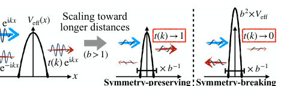
Fig 1. FIG. 1. Schematic illustration of our result. At low en- ergies, the problem reduces to scattering of the NG mode in an effective potential Veff(x). Under scaling, symmetry- preserving potentials shrink, leading to perfect transmission, whereas symmetry-breaking ones grow, leading to perfect re- flection.
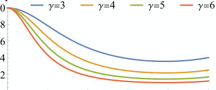
Fig 2. FIG. 2. Transmission coefficient T in Eq. (24) as a function of kia for several values of γ. The momentum inside the barrier is related to the incident momentum by ki = (co/ci)ko.
Summary. This paper establishes that the phenomenon of anomalous tunneling in broken-symmetry systems is a universal consequence of symmetry and scaling. It demonstrates that while symmetry-preserving defects become invisible at low energies, symmetry-breaking defects effectively block transmission. This result provides a unified theoretical rule for the behavior of Nambu-Goldstone modes like phonons and magnons.
Why it may be interesting. It provides a universal, symmetry-based principle for transport phenomena in many-body systems, which is highly relevant for understanding how excitations move through defects in BECs and other quantum fluids.
Detailed structure
Main problem. The paper seeks to establish the general conditions under which 'anomalous tunneling'—where the transmission coefficient approaches unity as energy tends to zero—occurs in systems with spontaneous symmetry breaking.
Main result. The authors prove that anomalous tunneling is a universal low-energy theorem where symmetry-preserving potentials are irrelevant and lead to perfect transmission, whereas symmetry-breaking perturbations are relevant and suppress transmission.
Method. The study uses a low-energy effective field theory (EFT) framework combined with scaling analysis and dimensional power counting to evaluate the impact of localized potentials.
Model / system. The framework applies to Nambu-Goldstone modes (Type-A and Type-B) in systems with spontaneous symmetry breaking, specifically illustrating the effect with superfluid phonons and magnons in ferromagnets.
Key observables. Transmission coefficient (T), reflection coefficient (R), and energy flux (Q).
Important parameters / regimes. Low-energy/low-momentum limit (k -> 0), symmetry-preserving vs. symmetry-breaking perturbations, and the scaling dimension of localized potentials.
Assumptions / limitations. The analysis for Type-B modes neglects subleading omega^2 g_t(x) terms to focus on the low-energy limit.
Figures summary. Figure 1 provides a schematic of the scaling analysis showing how potentials shrink or grow under scaling; Figure 2 shows the transmission coefficient approaching 1 as the momentum-width product (kia) approaches 0.
Paper structure. The paper introduces the concept of anomalous tunneling, establishes a general EFT framework for Nambu-Goldstone modes, performs scaling and power-counting analysis to distinguish perturbation types, and provides explicit examples using phonons and magnons.
Abstract
Anomalous tunneling refers to the phenomenon in which the transmission coefficient through a potential barrier approaches unity as the energy of an incident particle or quasiparticle tends to zero. This counterintuitive effect has been reported in systems exhibiting spontaneous symmetry breaking (SSB), such as superfluids, yet the general conditions for its occurrence remain unclear. In this Letter, we establish that anomalous tunneling of Nambu-Goldstone (NG) modes is a universal low-energy theorem dictated solely by symmetry and scaling, using a low-energy effective field theory (EFT) framework. We formulate the scattering of NG modes by external potentials in terms of spatially dependent EFT coefficients and demonstrate that symmetry-preserving localized potentials are irrelevant in the long-wavelength limit, leading to perfect transmission. In contrast, symmetry-breaking perturbations are relevant and suppress transmission, resulting in the absence of anomalous tunneling. We illustrate this universal behavior with explicit examples of superfluid phonons and magnons.
Authors: Wu Wang, Ke Zhang, Ke-Mi Xu, Shan-Gui Zhou Type: theory · Category: other · PDF:https://arxiv.org/pdf/2604.27614v1 Analysis basis: full PDF text, analyzed in chunks
Topic relevance:methods for driven-dissipative2/5 · quantum measurements2/5
↔ Scroll figures horizontally
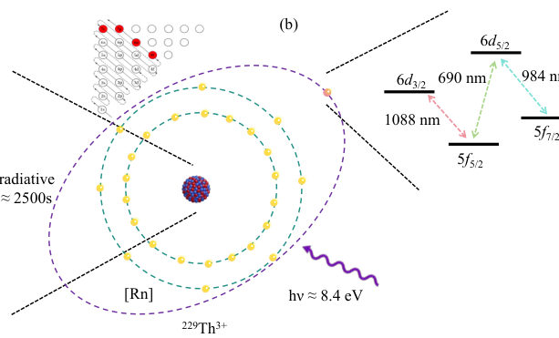
Fig 1. FIG. 1: (a) Nuclear ground and isomeric levels of 229Th, connected by an M1 transition with energy hν ≈8.4 eV. The vacuum radiative lifetime of the isomer is about 2500 s. (b) Partial low-lying electronic levels of 229Th3+, with 5f5/2 as the electronic ground level. The 690-nm, 984-nm, and 1088-nm transitions are used in the proposed electronic-fluorescence detection schemes.
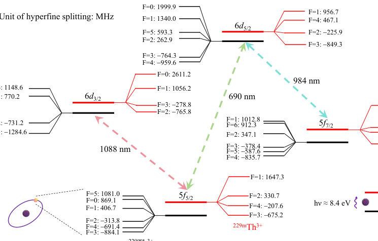
Fig 2. FIG. 2: Hyperfine structures of the selected electronic 5f5/2, 5f7/2, 6d3/2, and 6d5/2 levels in 229Th3+ and 229mTh3+. The hyperfine splittings are given in units of MHz. Hyperfine-resolved laser excitation is essential for improving the precision of the isomeric energy, while the distinct hyperfine structures of the nuclear ground and isomeric states enable nuclear-state detection via hyperfine-resolved electronic fluorescence.
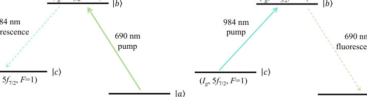
Fig 3. FIG. 4: Three-level detection scheme based on the 690-nm and 984-nm electronic transitions in the nuclear-ground-state configuration. (a) With only the 690-nm laser applied, the electronic population is driven from states |a⟩to |c⟩via the intermediate state |b⟩, accompanied by the emission of 984-nm fluorescence. The states |a⟩, |b⟩, and |c⟩belong to the hyperfine levels (Ig, 5f5/2, F = 1), (Ig, 6d5/2, F = 0), and (Ig, 5f7/2, F = 1), respectively. (b) With only the 984-nm laser applied, conversely, the electronic population is driven from |c⟩back to |a⟩via |b⟩, resulting in the emission of 690-nm fluorescence. The 690-nm or 984-nm fluorescence is suppressed when the nuclear isomer is excited.
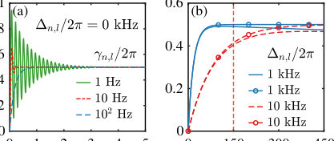
Fig 4. FIG. 6: Isomeric population of the state |2⟩as a function of irradiation time (a) at zero detuning ∆n,l/2π = 0 kHz for different laser linewidths γn,l, and (b) for different detunings ∆n,l with the laser linewidth fixed at γn,l/2π = 10 kHz. In panel (b), the circled curves represent the analytic solutions in Eq. (13), while the uncircled curves correspond to the nu- merical solutions of Eq. (4). The intensity of the 148-nm laser is fixed at 0.5 W/cm2 and the system is initially prepared in the state |1⟩for all cases.
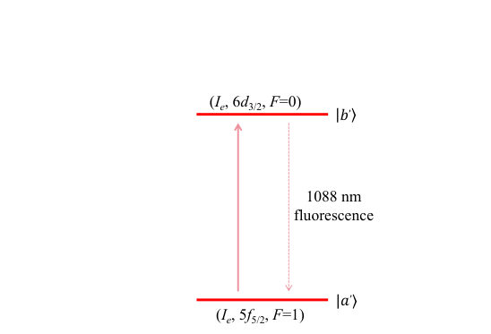
Fig 5. FIG. 5: Two-level detection scheme based on the 1088-nm electronic transition in the nuclear-isomeric-state configura- tion. The laser couples the states |a′⟩and |b′⟩, which belong to the hyperfine levels (Ie, 5f5/2, F = 1) and (Ie, 6d3/2, F = 0), respectively. The 1088-nm fluorescence is enhanced when the nuclear isomer is excited.
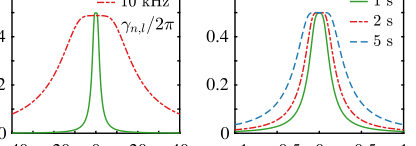
Fig 6. FIG. 7: Quasi-steady-state population of the isomeric state |2⟩as a function of the laser detuning ∆n,l (a) for different laser linewidths, and (b) for different irradiation times, as labeled. In panel (a), the irradiation time is set to 20 and 200 s for γn,l/2π = 1 and 10 kHz, respectively. In panel (b), the laser linewidth is fixed at γn,l/2π = 100 Hz. The intensity of the 148-nm laser is set to 0.5 W/cm2 and the system is initially prepared in the state |1⟩for all cases.
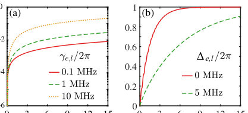
Fig 7. FIG. 8: Electronic population of the state |c⟩as a function of irradiation time (a) at a fixed detuning ∆e,l/2π = 100 MHz for different laser linewidths γe,l, and (b) for different detun- ings ∆e,l with the laser linewidth fixed at γe,l/2π = 0.1 MHz. In all cases, the electronic population transfer is driven by a 690-nm laser with an intensity of 1 W/cm2. The system is initially prepared in the state |a⟩.
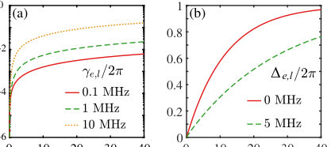
Fig 8. FIG. 9: Electronic population of the state |a⟩as a function of irradiation time (a) at a fixed detuning ∆e,l/2π = 100 MHz for different laser linewidths γe,l, and (b) for different detun- ings ∆e,l with the laser linewidth fixed at γe,l/2π = 0.1 MHz. In all cases, the electronic population transfer is driven by a 984-nm laser with an intensity of 0.1 W/cm2. The system is initially prepared in the state |c⟩.
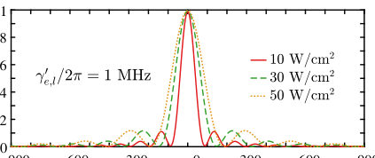
Fig 9. FIG. 10: Electronic population of the state |b′⟩as a function of the 1088-nm laser detuning ∆′ e,l for different laser intensi- ties, as labeled. The irradiation time is set to 10, 5.9, and 4.6 ns for laser intensities of 10, 30, and 50 W/cm2, respectively. The system is initially prepared in the state |a′⟩and the laser linewidth is fixed at γ′ e,l/2π = 1 MHz for all cases.
Summary. This paper presents a theoretical framework for the laser excitation and detection of the 229Th nuclear isomer in trapped ions. It proposes specific electronic fluorescence channels to improve detection efficiency and demonstrates that the nuclear transition can be found relatively quickly using current VUV technology. This work is a significant step toward the realization of practical nuclear clocks.
Why it may be interesting. It provides critical theoretical guidance for the development of nuclear clocks and explores the control of hyperfine-resolved dynamics in a system coupling nuclear and electronic degrees of freedom.
Detailed structure
Main problem. Achieving efficient laser excitation and detection of the low-energy nuclear isomeric state of 229Th in trapped-ion systems, specifically overcoming low fluorescence signals and large frequency uncertainties.
Main result. The study identifies that matching laser linewidth, detuning, and irradiation time is essential for excitation and proposes that a 1088-nm detection scheme provides the highest photon rate, enabling the nuclear transition to be located within one month.
Method. A quantum master equation approach in the Lindblad form is used to analyze hyperfine-resolved excitation dynamics and population transfer efficiency.
Model / system. The system consists of 229Th3+ ions in a trap, modeling the nuclear transition between ground and isomeric states via an M1 transition and electronic transitions via E1 transitions using a hyperfine-coupled basis.
Key observables. Isomeric population, electronic fluorescence photon rates (690, 984, and 1088 nm), and total search time for the nuclear transition frequency.
Important parameters / regimes. Nuclear Rabi frequency (~3.4 Hz), laser linewidths (100 Hz to 10 MHz), nuclear isomeric lifetime (~2500 s), and transition energy (~8.4 eV).
Assumptions / limitations. The nuclear isomer decay is neglected for short time scales (up to 500 s) to treat the system as a two-level model, and the rotating-wave approximation is applied.
Figures summary. Figure 1 shows nuclear and electronic energy levels and proposed fluorescence wavelengths; Figure 2 displays hyperfine structures; Figure 10 shows electronic population as a function of laser detuning.
Paper structure. The paper introduces the scientific problem, describes the physical system and hyperfine model, details the quantum master equation methodology, presents results for excitation and detection schemes, and concludes with an optimization of the nuclear transition search time.
Abstract
We present a comprehensive theoretical investigation of hyperfine-resolved excitation and detection of the low-energy isomeric state of $^{229}$Th in trapped $^{229}\mathrm{Th}^{3+}$ ions. Using a quantum master equation approach, we analyze the dependence of the isomeric population on laser linewidth, detuning, and irradiation time, showing that their proper matching is essential for efficient excitation. We further propose two nuclear-state detection schemes based on three hyperfine-resolved electronic fluorescence channels at 690, 984, and 1088 nm. Our analysis shows that the 690-nm and 984-nm scheme yields detectable photon rates on the order of $10^4~\mathrm{s}^{-1}$ per ion for each wavelength, whereas the 1088-nm scheme achieves a higher rate on the order of $10^5~\mathrm{s}^{-1}$ per ion. By quantifying the trade-off between irradiation time and scan-step size, we show that the nuclear transition can be located within one month for a 100-MHz uncertainty using currently available vacuum-ultraviolet laser technology. These results provide practical guidance for trapped-ion $^{229}\mathrm{Th}$ spectroscopy and the development of nuclear clocks.
Authors: Ramon Moya Type: theory · Category: other · PDF:https://arxiv.org/pdf/2604.27834v1 Analysis basis: full PDF text, analyzed in chunks
Topic relevance:driven-dissipative phase transition2/5 · methods for driven-dissipative2/5
↔ Scroll figures horizontally
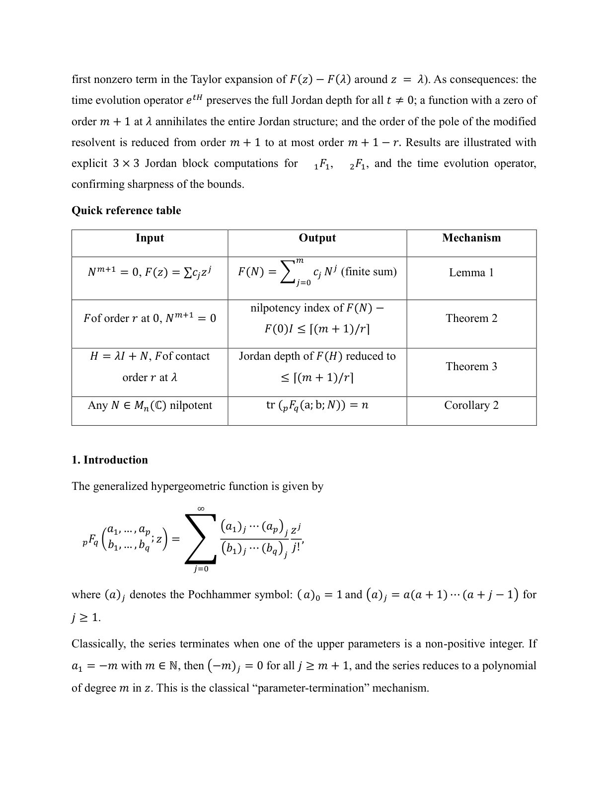
Fig 1. Low-resolution page preview, page 2
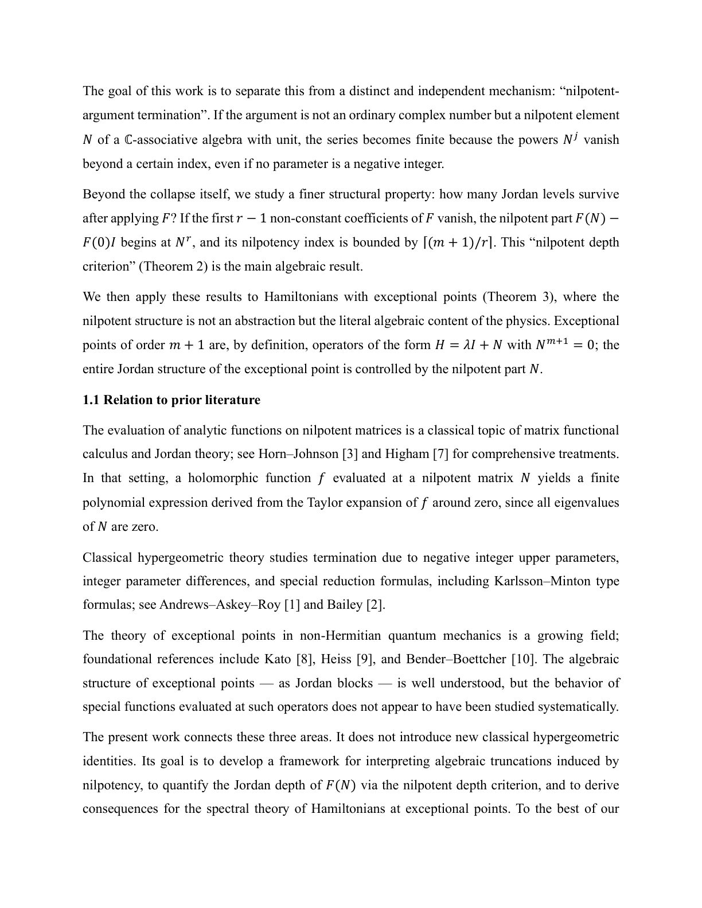
Fig 2. Low-resolution page preview, page 3
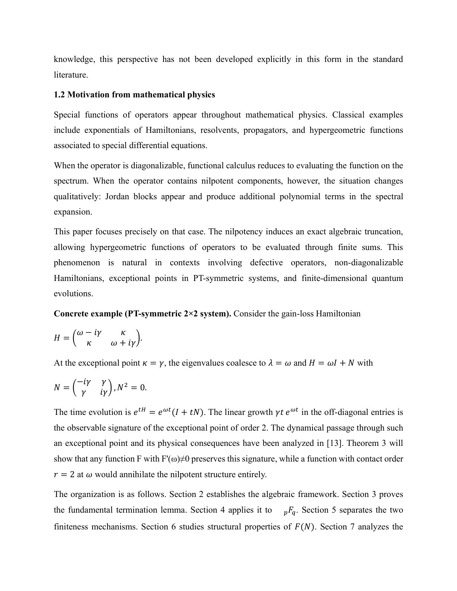
Fig 3. Low-resolution page preview, page 4
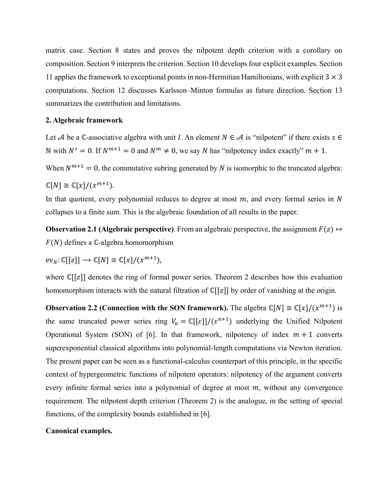
Fig 4. Low-resolution page preview, page 5
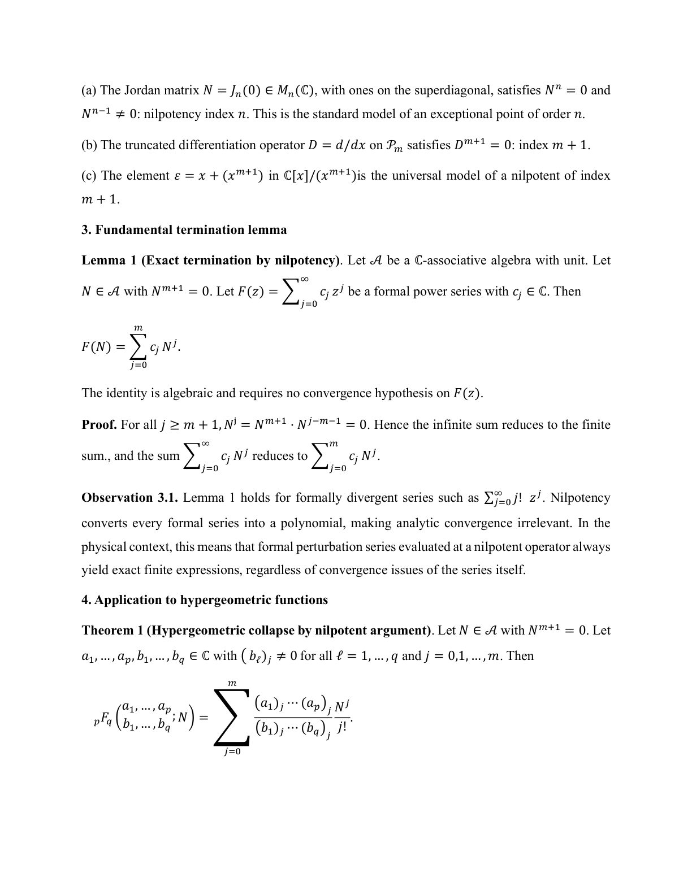
Fig 5. Low-resolution page preview, page 6
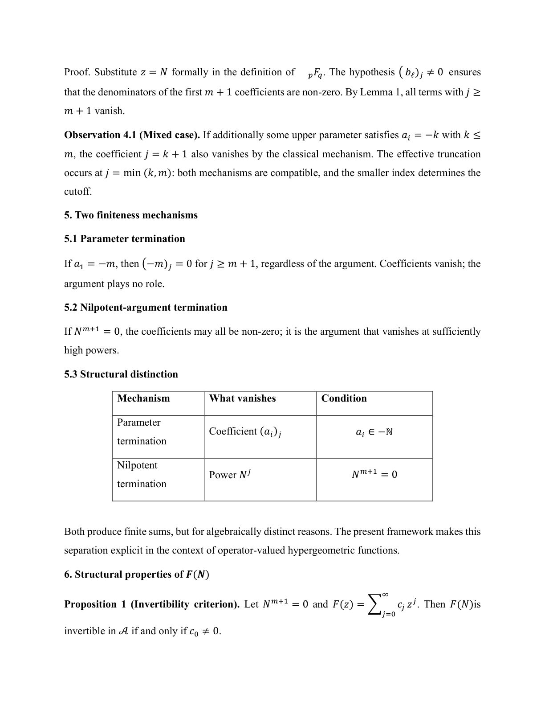
Fig 6. Low-resolution page preview, page 7
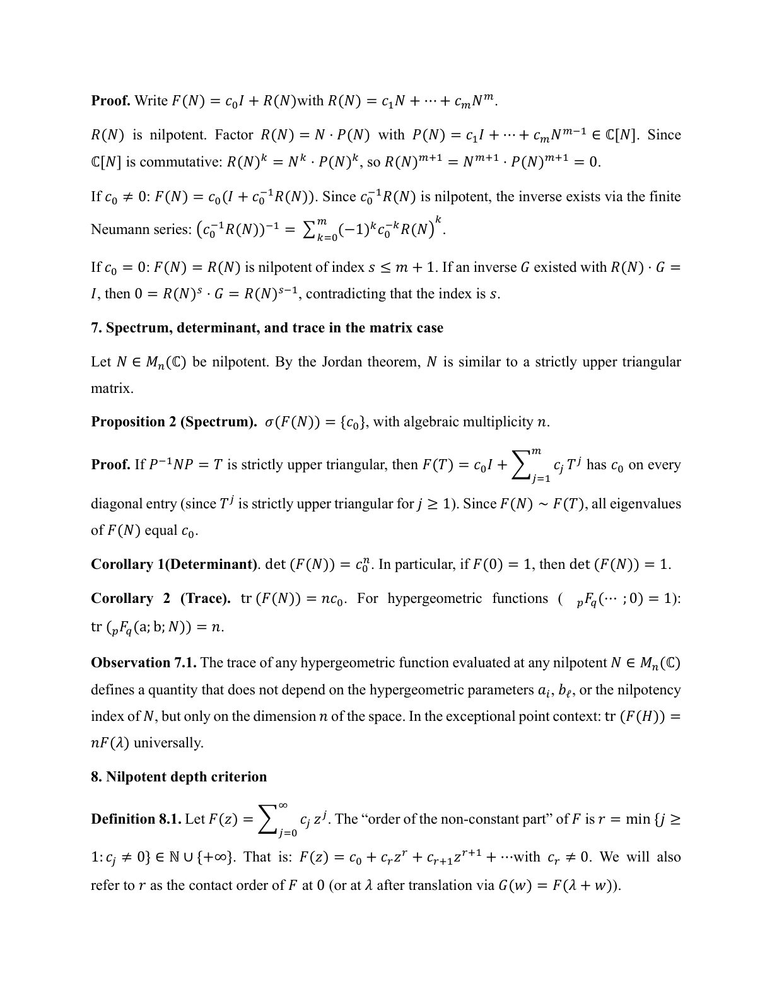
Fig 7. Low-resolution page preview, page 8
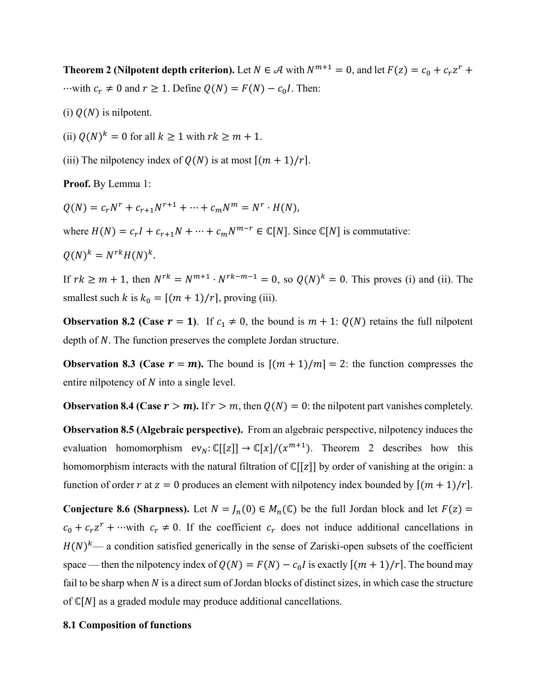
Fig 8. Low-resolution page preview, page 9
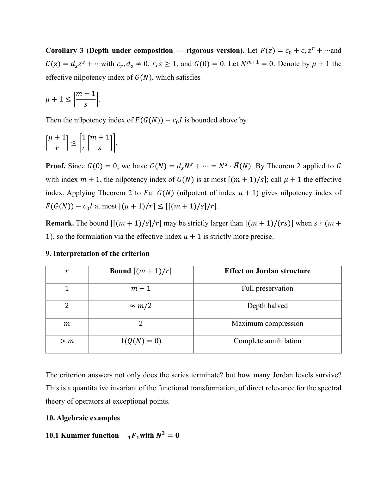
Fig 9. Low-resolution page preview, page 10
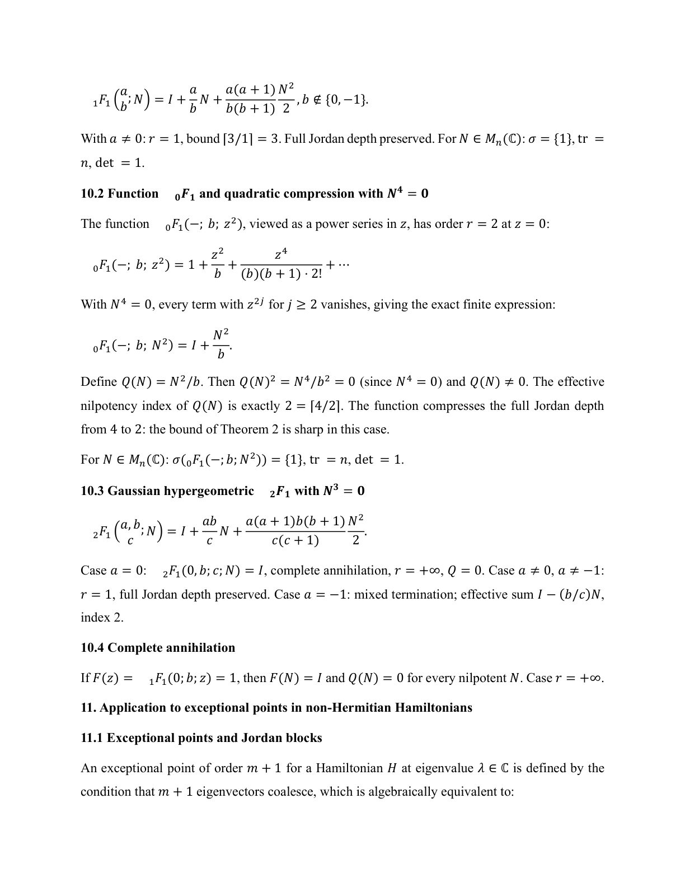
Fig 10. Low-resolution page preview, page 11
Summary. This paper proves that applying analytic functions to nilpotent operators causes a 'functional collapse' that reduces the complexity of their Jordan structure. It provides a specific criterion to calculate how much the Jordan depth of an exceptional point decreases based on the function's contact order. This has direct implications for understanding the stability and spectral properties of non-Hermitian systems.
Why it may be interesting. This is highly relevant for researchers in non-Hermitian quantum mechanics and open quantum systems, as it provides a precise mathematical tool to predict how physical transformations (like time evolution or spectral filtering) can simplify or destroy the complex algebraic structure of exceptional points.
Detailed structure
Main problem. The paper investigates how analytic functional transformations (like hypergeometric functions) affect the Jordan structure and nilpotency index of operators at exceptional points.
Main result. The author establishes a 'nilpotent depth criterion' showing that a function with contact order r reduces the Jordan depth of an exceptional point from m+1 to at most ceil((m+1)/r).
Method. The study uses functional calculus of nilpotent operators, Taylor expansions, and algebraic analysis within C-associative algebras.
Model / system. The mathematical model focuses on non-Hermitian Hamiltonians at exceptional points, represented by H = lambda I + N, where N is a nilpotent operator.
Key observables. Jordan depth (nilpotency index), trace of hypergeometric functions, and the order of the pole in the modified resolvent.
Important parameters / regimes. Nilpotency index (m+1), contact order (r) of the function at the eigenvalue, and the parameter-termination vs. nilpotent-argument termination mechanisms.
Assumptions / limitations. The operators are assumed to be finite-dimensional and nilpotent; functions are assumed to be analytic at the eigenvalue.
Figures summary. The paper includes explicit 3x3 Jordan block computations for various functions (exponential, Kummer, Gauss hypergeometric) to validate the theoretical bounds.
Paper structure. The paper begins by defining the functional collapse of hypergeometric functions, introduces the nilpotent depth criterion (Theorem 2), applies this to Hamiltonians at exceptional points (Theorem 3), and concludes with explicit 3x3 matrix examples and consequences for the resolvent.
Abstract
We study hypergeometric functions of nilpotent operators in finite-dimensional settings, motivated by the algebraic structure of exceptional points in non-Hermitian quantum mechanics. Our starting point is the following exact result: if N is a nilpotent operator of index m+1 in an associative algebra over C, then every generalized hypergeometric function pFq evaluated at N reduces to a finite polynomial in N of degree at most m, without any analytic convergence requirement. This "functional collapse" is distinct from the classical parameter-termination mechanism and arises purely from the nilpotent structure of the argument. The main result is a "nilpotent depth criterion" (Theorem 2): if the first non-constant coefficient of a formal series F appears in degree r >= 1, then the nilpotent part F(N) - F(0)I has nilpotency index bounded above by ceil((m+1)/r). We apply this criterion to Hamiltonians at exceptional points, where H = lambda I + N with N^{m+1} = 0. Theorem 3 establishes that a function F analytic at lambda reduces the Jordan depth of the exceptional point from m+1 to at most ceil((m+1)/r), where r is the contact order of F at lambda. As consequences: the time evolution operator e^{tH} preserves the full Jordan depth for all t != 0; a function with a zero of order m+1 at lambda annihilates the entire Jordan structure; and the order of the pole of the modified resolvent is reduced from m+1 to at most m+1-r. Results are illustrated with explicit 3x3 Jordan block computations for 1F1, 2F1, and the time evolution operator, confirming sharpness of the bounds.
Authors: Hannes Köper, Thomas Gasenzer Type: theory · Category: quantum gases · PDF:https://arxiv.org/pdf/2604.27885v1 Analysis basis: abstract only; PDF text extraction failed or PDF unavailable
Topic relevance:analog quantum simulation2/5 · exotic spin models in light-matter2/5
Summary. This paper develops a mathematical framework using matrix-valued bosonic fields to describe 1D spinor Bose gases with arbitrary spin. It successfully maps the spin-1 case to a set of solvable integral equations, allowing for the precise calculation of the ground state phase diagram. The work highlights how interactions can lead to bound states that change the effective exclusion principle for the particles.
Why it may be interesting. It provides a powerful integrable framework for studying complex spin multiplets in 1D, offering new insights into how bound states can alter the fundamental statistics (Pauli exclusion principle) of interacting bosons in cold atom systems.
Detailed structure
Main problem. The paper aims to generalize the description of one-dimensional spinor Bose gases to arbitrary spin multiplets using a matrix-based integrable model.
Main result. The authors derive a quantum integrable matrix extension of the nonlinear Schrödinger model and compute the ground state phase diagram for a spin-1 Bose gas, revealing that paired bound states modify the effective Pauli exclusion principle for bosons.
Method. The study employs algebraic Bethe-ansatz techniques to construct eigenstates and derive Bethe equations, alongside the derivation of integral equations for thermodynamic properties.
Model / system. A quantum integrable matrix extension of the nonlinear Schrödinger model where fundamental fields are represented by an m x n matrix of bosonic field operators, specifically applied to spin-1 Bose gases with repulsive density-density and anti-ferromagnetic spin-spin interactions.
Key observables. Ground state phase diagram, spectra of conserved quantities, and equilibrium thermodynamic properties.
Important parameters / regimes. Chemical potential, external magnetic field, and the Lieb parameter (gamma).
Assumptions / limitations. The system is restricted to one spatial dimension with repulsive density-density interaction and anti-ferromagnetic spin-spin coupling.
Paper structure. The paper introduces a matrix extension of the nonlinear Schrödinger model, applies the algebraic Bethe-ansatz to find eigenstates and Bethe equations, focuses on the spin-1 case to derive thermodynamic integral equations, and concludes with a phase diagram analysis and discussion of bound state effects.
Abstract
Degenerate spinor Bose gases with repulsive density-density interaction and anti-ferromagnetic spin-spin coupling in one spatial dimension are shown to be described by a quantum integrable matrix extension of the nonlinear Schrödinger model, whose fundamental fields are described by an $m\,\times\,n$ matrix of bosonic field operators. The eigenstates of this model are constructed for arbitrarily sized matrix field operators by means of algebraic Bethe-ansatz techniques, and the corresponding Bethe equations governing the spectra of conserved quantities are derived. The approach thus generalizes previously chosen techniques to account for arbitrary spin multiplets and their spin-spin interaction. Focusing on the specific case of the $2\times2$ model, which is shown to correspond to a spin-$1$ Bose gas, a set of integral equations is derived, which describe its equilibrium thermodynamic properties. From these, the ground state phase diagram is computed both, numerically and analytically in the parameter plane spanned by the chemical potential and an external magnetic field. Furthermore, the existence of paired bound states is shown to modify the Pauli exclusion principle for interacting bosons in one dimension. In particular, it is found that no two quasiparticle rapidities can coincide, provided that the Lieb parameter satisfies $γ>4/3$.
Authors: Markus Baumann, Maximilian Zorn, Thomas Gabor, Claudia Linnhoff-Popien, Jonas Stein Type: both · Category: quantum information and computing · PDF:https://arxiv.org/pdf/2604.28160v1 Analysis basis: full PDF text, analyzed in chunks
Topic relevance:QC/QI experiment2/5 · quantum measurements2/5
↔ Scroll figures horizontally
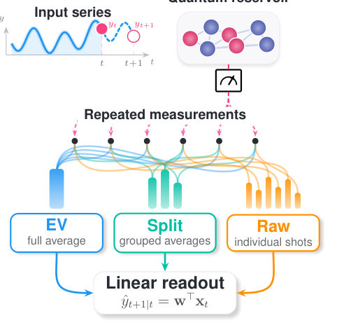
Fig 1. Fig. 1. Three ways of organizing shot-based training data under a fixed measurement budget: EV averaging, split-ensemble training, and raw stacking.
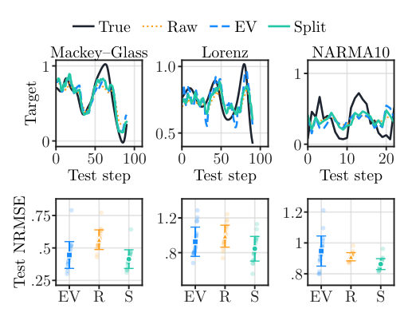
Fig 2. Fig. 2. Shared operating point (Q = 4, Nshots = 18, λ = 10, ρEV = 2.65125). Top: illustrative test trajectories, where the displayed seed is the one whose split-ensemble test NRMSE is closest to the 20-seed median. Bottom: test outcomes over all 20 seeds.
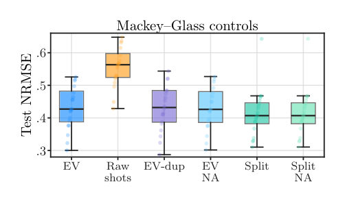
Fig 3. Fig. 4. Baseline and estimator controls at the shared operating point. The compared methods are EV, Raw, EV-dup, EV-NA, split-ensemble, and Split- NA.
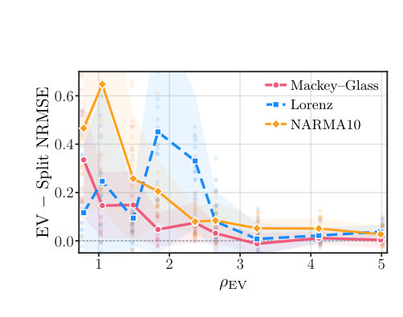
Fig 4. Fig. 3. EV-minus-split-ensemble test gap ∆as a function of ρEV across the common Nshots sweep. Points show individual seeds; curves and bands summarize the 20-seed mean and spread. Positive values favor split-ensemble.
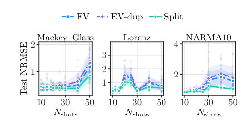
Fig 5. Fig. 6. Duplication control over the broader Nshots sweep. Duplication matches the split-ensemble example count by repeating the fully averaged feature vector, without creating distinct grouped views.
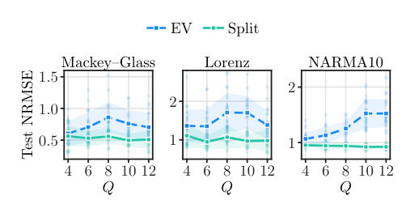
Fig 6. Fig. 5. Reservoir-size sweep with Q ∈{4, 6, 8, 10, 12} and 20 seeds per point. The absolute EV and split-ensemble curves are shown; their vertical separation corresponds to the EV-minus-split-ensemble gap. Positive values favor split-ensemble.
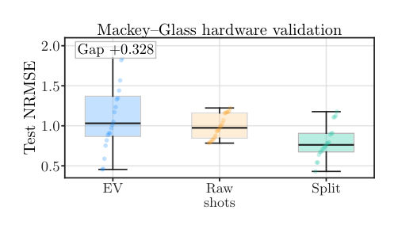
Fig 7. Fig. 7. Mackey–Glass hardware validation on ibm_marrakesh at total budget 20,000 and Nshots = 40. The plot compares EV, Raw, and split- ensemble for this case; lower values indicate better forecasting performance.
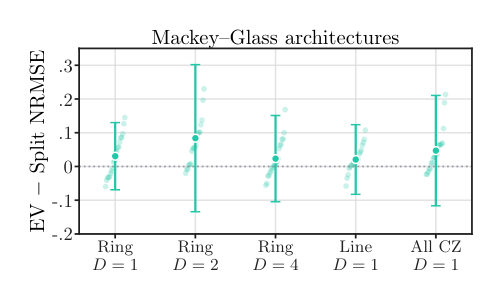
Fig 8. Fig. 8. Mackey–Glass slice of the architecture ablation at the shared operating point (Q = 4, Nshots = 18, 20 seeds; no added synthetic noise). The plot shows the EV-minus-split-ensemble gap across five architectures; D denotes circuit depth. Positive values favor split-ensemble.
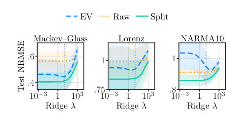
Fig 9. Fig. 9. Ridge-regularization ablation at Q = 4, Nshots = 18 (20 seeds). Curves show mean test NRMSE over λ with ±1 SD bands.
Summary. The paper introduces a simple algorithmic technique called split-ensemble training to reorganize quantum measurement shots. By grouping shots into intermediate averages, it balances the trade-off between measurement noise and training sample size, significantly improving the accuracy of quantum-classical hybrid time-series prediction on both simulators and real hardware.
Why it may be interesting. not directly relevant
Detailed structure
Main problem. How to optimize the use of finite measurement records in Quantum Reservoir Computing (QRC) to improve time-series prediction without increasing the quantum hardware execution budget.
Main result. The proposed 'split-ensemble' training method, which reorganizes shots into partially denoised groups, consistently outperforms standard expectation-value and raw-stacking approaches, especially on noisy real hardware.
Method. A split-ensemble training protocol that partitions $N$ shots into $G$ disjoint groups, each averaged to create a distinct, partially denoised feature vector for a classical linear readout.
Model / system. A Quantum Reservoir Computing framework using a fixed $Q$-qubit circuit (e.g., ring-CNOT entangler) with repeated executions, combined with a classical leaky integrator and a linear ridge regression readout.
Key observables. Single-qubit $Z_i$ and $X_i$ observables derived from measurement bitstrings.
Important parameters / regimes. Total execution budget ($S_{total}$), group size ($k$), training-support ratio ($
ho_{EV}$), reservoir size ($Q$), and leakage rate ($\eta$).
Assumptions / limitations. The total number of quantum circuit executions is a fixed resource; the classical readout is a linear model.
Figures summary. Figure 1 illustrates the three data organization strategies; Figure 2 shows NRMSE results for various time-series tasks; Figure 3-5 show performance across reservoir sizes and architectures; Figure 6 compares split-ensemble to EV-dup; Figure 7-8 show hardware validation on IBM hardware.
Paper structure. The paper introduces the problem of shot-noise vs. data scarcity, defines the three data organization protocols, provides a theoretical framework for the split-ensemble advantage, presents numerical benchmarks on various time-series tasks, performs ablation studies to rule out simple data augmentation, and validates the method on real superconducting quantum hardware.
Abstract
Near-term quantum computers are accessed through repeated circuit executions, which produce finite measurement records rather than exact deterministic outputs. In quantum reservoir computing, these records are converted to feature vectors for a classical readout. The standard expectation-value approach averages all shots from one labeled time step into a single feature vector. This reduces finite-shot noise, but it also gives the readout only one training example from many circuit executions. We introduce split-ensemble training: the same shots are split into groups, and each group average is used as a separate, partially denoised feature vector for the same target. The quantum circuit, task, and measurement budget remain unchanged. Across simulated forecasting benchmarks and real hardware experiments, this simple reorganization improves prediction when full averaging leaves the readout with too few training examples, with the strongest gains observed on hardware. Our results establish shot-record organization as a simple, broadly applicable algorithmic lever for improving near-term quantum learning without additional quantum hardware cost.
Authors: Varin Sikand, Andrew Nemec Type: theory · Category: quantum information and computing · PDF:https://arxiv.org/pdf/2604.27284v1 Analysis basis: full PDF text, analyzed in chunks
Topic relevance:entanglement & information structure2/5 · quantum measurements1/5
↔ Scroll figures horizontally
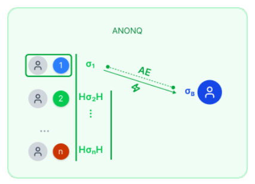
Fig 1. Fig. 1: Overview of ANONQ(|ϕ⟩) (Protocol II.4) with Alice encircled in green and Bob in blue. Each participant holds one qubit of the n-qubit GHZ state, denoted as σi, and all participants besides Alice and Bob apply an H gate to their qubit, leaving only Alice and Bob with an entangled pair. The green arrow represents the teleportation step after the AE protocol.Fig 2. Fig. 2: Overview of the QASS protocol. We initially assume the secret has been encoded into n shares. In Step 1, each green arrow denotes a share sent from each k participating shareholders via the ANONQ protocol. Once received by Bob, the identities of each share is entirely lost due to ANONQ. Finally, Bob decodes the anonymous set of retrieved shares using the PI code’s decoding circuit to obtain the secret.
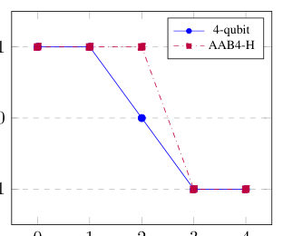
Fig 3. Fig. 3: Hmin for QASS schemes using the ((4, 2, 2)) Aydin et al. PI code [46] and the ((4, 2, 2)) Hagiwara and Nakayama PI code [13], the ramp QSS scheme using the [[4, 1, 2]] Leung et al. stabilizer code [44], and the HQASS scheme using Aydin et al. PI code [46] for both quantum and classical secrets. All three 4-qubit QSS schemes have identical Hmin values, whereas the HQASS scheme has a threshold of k = 3 with no intermediate share sets.
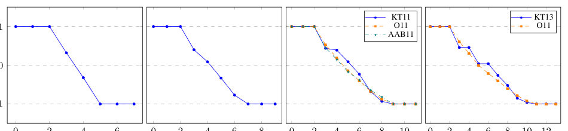
Fig 4. Fig. 4: Comparison of Hmin across various PI codes of distance 3. (a) The ((7, 2, 3)) codes of Pollatsek and Ruskai [47], [49] and Aydin et al. [46], which have the same Hmin values. (b) The ((9, 2, 3)) code of Ruskai [48] (the gnu (3, 3, 1)-PI code [50]). (c) Three ((11, 2, 3)) codes including the one given by Kubischta and Teixeira [49], the shifted gnu (3, 3, 1)-PI code of Ouyang [45], and the Q4,1,2,−1 code of Aydin et al. [46]. (d) Two ((13, 2, 3)) codes including one given by Kubischta and Teixeira [49] and the shifted gnu (3, 3, 1)-PI code of Ouyang [45].
Summary. This paper introduces a new quantum secret sharing protocol that ensures the identities of the senders remain anonymous during the decoding process. By using permutation-invariant codes, the authors also provide a new mathematical way to precisely measure how much information an adversary can steal from partial shares.
Why it may be interesting. not directly relevant
Detailed structure
Main problem. Existing Quantum Secret Sharing (QSS) schemes fail to protect the identities of senders during decoding and lack a robust single-shot metric to quantify information leakage in ramp-type schemes.
Main result. The authors construct a Quantum Anonymous Secret Sharing (QASS) protocol using permutation-invariant codes that achieves sender-anonymity and can tolerate missing shareholders. They also establish quantum conditional min-entropy as a valid single-shot measure for quantifying information leakage.
Method. The study utilizes permutation-invariant (PI) quantum error-correcting codes combined with anonymous quantum transmission algorithms (ANONQ). They use semidefinite programming (SDP) and the Knill-Laflamme conditions to evaluate information leakage and fidelity.
Model / system. The protocol operates on n-qubit systems using permutation-invariant codes and GHZ states, modeled under quantum erasure and depolarizing channels.
Key observables. Sender-anonymity, quantum conditional min-entropy (Hmin), maximum fidelity (F), and quantum correlation (q_corr).
Important parameters / regimes. Code distance (d), threshold (k), number of physical qubits (n), and number of participating shareholders (np).
Assumptions / limitations. The protocol assumes all shareholders and the receiver are honest; it also assumes the use of permutation-invariant codes and relies on GHZ-based anonymous transmission.
Figures summary. Figure 1 illustrates the ANONQ protocol steps; Figure 2 shows the QASS protocol flow; Figure 3 compares Hmin decay across different PI codes.
Paper structure. The paper introduces the problem of anonymity and leakage, describes the construction of the QASS protocol using PI codes, provides a theoretical justification for the min-entropy metric via Knill-Laflamme conditions, and concludes with numerical evaluations of various stabilizer codes.
Abstract
Quantum secret sharing schemes are a family of quantum cryptographic protocols which provide secure quantum encodings, mapping one secret to multiple shares of information such that the original secret cannot be accessed without an authorized set of shares present for decoding. In this work, we describe a protocol that enables sender-anonymity during the secret decoding process. By using permutation-invariant QEC codes along with a set of anonymous quantum transmission algorithms, we construct a quantum anonymous secret sharing scheme that achieves sender-anonymity. We quantify information leakage in ramp quantum secret sharing schemes via the quantum conditional min-entropy, justifying it as a valid measure of leaked information by relating it to the Knill-Laflamme quantum error correction conditions. Finally, we evaluate several permutation-invariant codes using this measure to make observations on the information leakage of intermediate shares for each quantum anonymous secret sharing scheme.
Authors: David Navia, Ángel S. Sanz Type: theory · Category: numerical methods · PDF:https://arxiv.org/pdf/2604.27851v1 Analysis basis: full PDF text, analyzed in chunks
Topic relevance:non-equilibrium dynamics2/5 · quantum measurements1/5
↔ Scroll figures horizontally
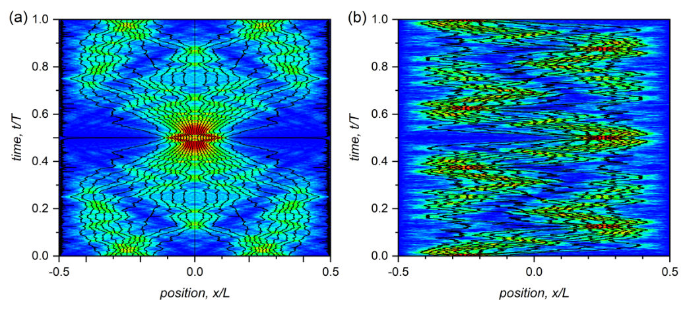
Fig 1. FIG. 1. Fractal space–time quantum carpets generated by the evolution in time of the probability density associated with (a) a coherent superposition of two symmetrically distributed square functions, and (b) only the left-hand side square function. In both cases, the width of the square functions is such that w/L = 0.25 and are centered at x± = ±0.25L. In the density plots, blue denotes lower values of the probability density, while the transition to red indicates increasing values (for a better visualization of the details both probability densities ) For a better visualization of the carpets’ details, the probability densities have been truncated to about 60% their maxima. To make...
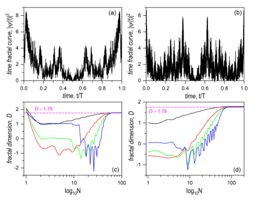
Fig 2. FIG. 3. Time quantum fractal profile exhibited by the prob- ability density of the symmetric (a) and asymmetric (b) wave functions shown in Fig. 1. Both time fractals are computed at x = −0.25L, where L denotes the total length of the cavity. The numerical estimates of the corresponding fractal dimen- sions obtained from the multiresolution analysis are shown, respectively, in panels (c) and (d): Haar (black), db4 (red), db8 (green), and db16 (blue). These estimates are determined from convergence with the number of basis functions consid- ered in the spectral reconstruction without adding any extra hypothesis. As it is shown, beyond N ≳100, all results show fast convergence to the value D...
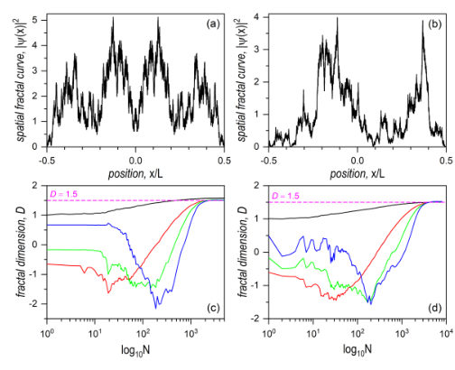
Fig 3. FIG. 2. Space quantum fractal profile exhibited by the prob- ability density of the symmetric (a) and asymmetric (b) wave functions shown in Fig. 1. Both space fractals are computed at t = T/ √
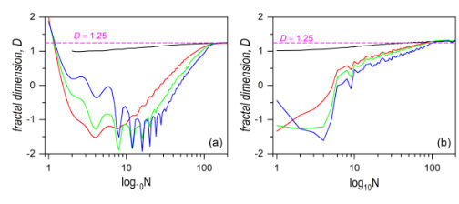
Fig 4. FIG. 4. Numerical estimates of the fractal dimension ob- tained from the multiresolution analysis for three flux-based fractal (Bohmian) trajectories for different instances: Haar (black), db4 (red), db8 (green), and db16 (blue). The re- sults in panels (a) and (b) correspond to trajectories with initial conditions taken at x0 = −0.25L associated with the symmetric and asymmetric wave functions whose carpets are shown in Figs. 1(a) and (b), respectively, with w/L = 0.25. Note that, beyond N ≳100, all results show fast convergence to the value D = 1.25 (magenta dashed line) conjectured by Berry for space–time fractals [3].
Summary. The paper introduces a wavelet-based multiresolution framework to quantify the fractal dimensions of quantum carpets in confined dynamics. This method avoids the biases of traditional geometric or Fourier methods and provides a robust way to characterize space, time, and space-time fractality. It successfully recovers predicted universal fractal dimensions even in numerically limited, pre-fractal regimes.
Why it may be interesting. This provides a new, computationally efficient diagnostic tool for analyzing multiscale features and interference-driven dynamics in any system exhibiting complex, self-similar patterns, such as wave propagation in confined geometries or anomalous transport.
Detailed structure
Main problem. The difficulty in quantitatively and robustly characterizing quantum fractals (self-similar structures in quantum states) due to the limitations of traditional Fourier-based or geometric scaling methods which are sensitive to finite-size effects and numerical truncation.
Main result. The development of a wavelet-based multiresolultion analysis (MRA) framework that provides a robust, scale-adaptive, and hypothesis-free method to extract fractal dimensions for space, time, and space-time quantum fractals.
Method. Wavelet-based Multiresolution Analysis (MRA) using discrete wavelet transforms (Haar and Daubechies families) to analyze the scale-dependent distribution of wavelet energies and Bohmian trajectories to probe space-time correlations.
Model / system. A quantum particle confined within a one-dimensional infinite potential well, starting from initial states with spatial discontinuities (e.g., square wave functions).
Key observables. Probability density, probability flux, Bohmian trajectories, and fractal dimensions (spatial, temporal, and space-time).
Important parameters / regimes. Dyadic scales (j), spectral truncation (N), recurrence time (T), and wavelet family type.
Assumptions / limitations. The system is subject to a 'pre-fractal' regime due to finite spectral resolution/truncation, and the scaling exponent is extracted via linear regression within an intermediate scaling window.
Figures summary. Figure 1 shows space-time quantum carpets with superimposed Bohmian trajectories; Figure 2 shows spatial profiles and fractal dimension estimates; Figure 3 shows temporal profiles and fractal dimension estimates; Figure 4 shows the convergence of fractal dimensions as a function of spectral truncation.
Paper structure. The paper identifies limitations in existing fractal characterization methods, introduces the wavelet MRA framework, applies it to confined 1D dynamics, validates the results against Berry's predicted universal dimensions, and demonstrates the method's robustness and efficiency.
Abstract
Fractal structures naturally emerge in quantum systems whose initial states exhibit spatial discontinuities, a phenomenon first identified by Berry in the paradigmatic case of a particle confined in an infinite potential well. While previous analyses of quantum fractals have mainly relied on spectral decompositions and geometric scaling arguments, their quantitative characterization often depends on scale choices and truncation effects. Here we present a wavelet-based multiresolution framework that enables a direct and assumption-free quantification of quantum fractality. Fractal dimensions are extracted from the scale-dependent distribution of wavelet energies, without invoking prior power-law hypotheses. The method is applied to space and time quantum fractals arising in confined dynamics, as well as to dynamical curves generated by the associated quantum probability flux. These flux-driven trajectories provide a natural space--time parametrization of the underlying fractal structure and yield scaling properties fully consistent with Berry's predictions for space--time fractals. The resulting fractal dimensions are shown to be robust with respect to the choice of wavelet family, numerical cutoffs, and system parameters. Beyond validating earlier conjectures, the present framework offers a unified and computationally efficient tool for the multiscale analysis of quantum fractality in confined and interference-driven quantum dynamics. That is, it provides an operational, scale-adaptive criterion that unifies the characterization of space, time, and space--time quantum fractals within a single, hypothesis-free approach.
Authors: Sudhanva Joshi, Sunil Kumar Mishra Type: theory · Category: quantum information and computing · PDF:https://arxiv.org/pdf/2604.28050v1 Analysis basis: full PDF text, analyzed in chunks
Topic relevance:entanglement & information structure2/5
↔ Scroll figures horizontally
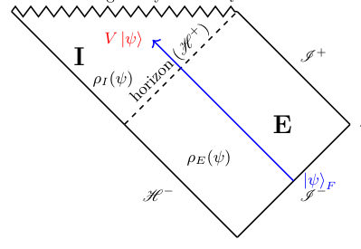
Fig 1. FIG. 1: Penrose diagram of a black hole formed by gravitational collapse. The spacetime is divided into an interior region I (above the dashed horizon line H +) and an exterior region E (below). An infalling quantum system F in state |ψ⟩crosses the horizon, with its state embedded in I via the isometric embedding V . The reduced states ρI(ψ) and ρE(ψ) encode the information accessible to interior and exterior observers, respectively. The trade-off inequality Eq. (16) constrains the relationship between horizon smoothness (ε) and exterior distinguishability (Dmax).
Summary. This paper establishes a fundamental mathematical trade-off between the ability to distinguish black hole microstates from the outside and the smoothness of the event horizon. It proves that observable quantum hair is quantitatively incompatible with a smooth horizon, meaning any 'hair' requires a violation of the equivalence principle. This provides a rigorous information-theoretic constraint on various black hole microstate models like fuzzballs and soft hair.
Why it may be interesting. not directly relevant
Detailed structure
Main problem. Investigating the fundamental compatibility between the existence of observable quantum hair (exterior distinguishability) and the smoothness of the black hole event horizon (equivalence principle validity) under unitary evolution.
Main result. The authors derive a quantitative trade-off inequality, epsilon >= D_max^2/8, proving that any model predicting non-zero exterior quantum hair must necessarily involve a violation of horizon smoothness.
Method. The study employs quantum information-theoretic tools, specifically the Stinespring dilation of quantum channels, the diamond norm, and the Kretschmann-Schlingemann-Werner (KSW) continuity theorem.
Model / system. A semiclassical black hole model where the spacetime is partitioned into interior and exterior sectors, treating the horizon crossing as a quantum channel acting on an infalling system.
Key observables. epsilon (horizon smoothness violation/deviation from isometry), D_max (maximum exterior distinguishability/trace distance), and F_I (interior fidelity).
Important parameters / regimes. The Bekenstein-Hawking entropy (S_BH) scale, the regime of perfect isometry (epsilon = 0), and the firewall/fuzzball regimes (epsilon ~ O(1)).
Assumptions / limitations. Global unitarity, horizon causality (no signaling from interior to exterior), and diamond-norm interior accessibility.
Figures summary. A Penrose diagram illustrating the black hole interior and exterior regions, showing an infalling system crossing the horizon and the encoding of states.
Paper structure. The paper begins by establishing an exact no-hair lemma for perfect isometries, then uses the KSW theorem to extend this to an approximate theorem, ultimately deriving the quadratic trade-off inequality and discussing implications for fuzzballs and soft hair.
Abstract
The black hole no-hair theorem is traditionally derived from the uniqueness theorems of general relativity. We show that a quantitative form follows from unitarity together with the standard semiclassical assumptions of horizon causality and interior accessibility. For a semiclassical black hole, we prove that the trace distance between exterior states corresponding to two same-charge infalling states is bounded by $2\sqrt{2\varepsilon}$, where $\varepsilon$ quantifies the diamond norm departure of the interior channel from a perfect isometry which is a quantitative measure of horizon-smoothness violation that upper-bounds $1 - F_I$, where $F_I$ is the interior fidelity capturing how faithfully the infalling state is retained. Inverting this relation yields a trade-off inequality, $\varepsilon \geq D_{\max}^2/8$, between the maximum exterior distinguishability $D_{\max}$ and the degree of horizon smoothness. This establishes that observable exterior quantum hair is quantitatively incompatible with exact horizon smoothness under unitary evolution: any model predicting nonzero exterior hair must violate the equivalence principle at the horizon by a quantifiable amount. Pre-existing entanglement with the infalling system is the only channel for quantum hair compatible with both unitarity and horizon smoothness.
Authors: Shang Liu Type: theory · Category: strongly correlated electrons · PDF:https://arxiv.org/pdf/2604.27363v1 Analysis basis: full PDF text, analyzed in chunks
Topic relevance:entanglement & information structure2/5
↔ Scroll figures horizontally
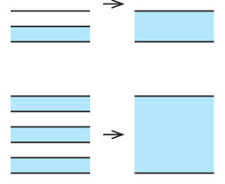
Fig 1. FIG. 1. The layered gauging procedure. (a) Sequentially gauge a bilayer symmetry acting on every neighboring pair of layers (n, n+1). From n = 1 to n = 2, n = 3, and so on. This is the main approach taken in this paper. (b) Alternatively, we may take an even-odd gauging pattern: First gauge the bilayer symmetries acting on layer pairs (2l −1, 2l), and then gauge those acting on layer pairs (2l, 2l + 1).
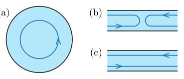
Fig 2. FIG. 2. Bulk topological order and boundary symmetry. (a) A 2d topological order on a disk region and a circular anyon loop. (b) A cylinder region and a contractible anyon loop. (c) Antiparallel noncontractible anyon loops on a cylinder region. Panels (b) and (c) are equivalent if the anyon line N satisfies N × ¯ N = 1.
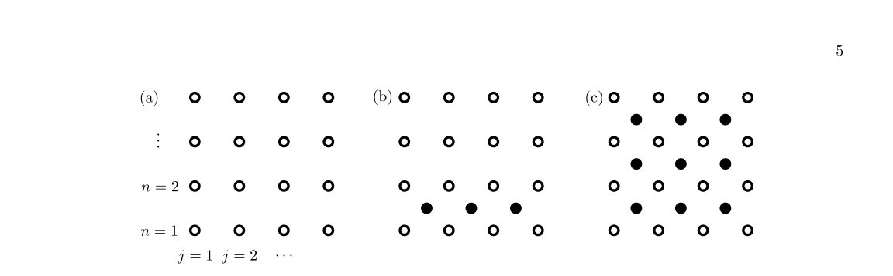
Fig 3. FIG. 3. Lattice geometry evolution in the layered gauging construction of a 2d topological order. (a) Stacking multiple 1d chains into a 2d lattice. (b) Coupling the first two layers to gauge field degrees of freedom. (c) Final form of the bulk lattice.
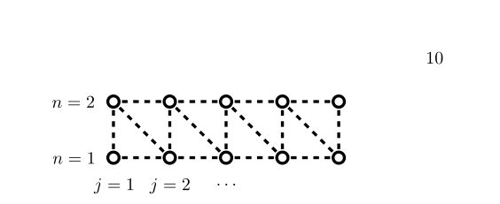
Fig 4. FIG. 4. Triangular plaquettes for the purpose of layered gaug- ing 1d anomalous Z2 symmetry.
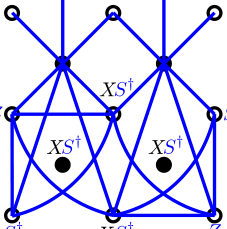
Fig 5. FIG. 5. 2d bulk stabilizers constructed from the 1d anomalous Z2 symmetry. Each blue bond represents a controlled-Z operator. Stabilizers in (a) are denoted by SE n+1/2,j where (n+1/2, j) locates the center of the four Pauli-X. Stabilizers in (b) are denoted by SM n,j+1/2 where (n, j + 1/2) locates the center of the four Pauli-Z. When stabilizers in (b) are satisfied, (a) can be reduced to the form of (c) which we denote by SER n+1/2,j. Either (a) and (b), or (c) and (b), lead to the double semion topological order.
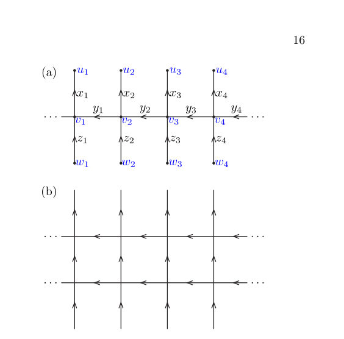
Fig 6. FIG. 7. Layered gauging for the 1d onsite G-symmetry. (a) The first two layers and the corresponding gauge field degrees of freedom. (b) The first three layers.
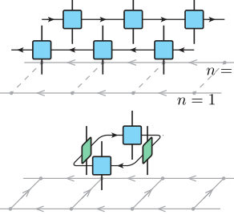
Fig 7. FIG. 8. Layered gauging for the 1d Rep(G) symmetry. (a) Lattice geometry of a single layer. (b) Tensor network picture of the bilayer symmetry operators. Dashed lines on the lattice are to guide the eyes and have no physical meaning at the mo- ment. (c) Local gauge symmetry generators from the gauging- like procedure. (d) Lattice geometry after the“gauging” for the first two layers.
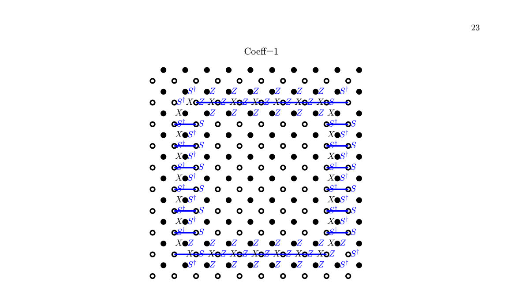
Fig 8. FIG. 10. A ER-loop operator from the product of SER stabilizers in a rectangular region. The overall coefficient, which is not important for our purpose, depends on the rectangular size and equals to +1 for the example shown.
Summary. The paper introduces 'layered gauging,' a new method to construct higher-dimensional topological orders by stacking and gauging lower-dimensional layers. It successfully derives well-known models like the X-cube and Toric Code and extends the construction to complex non-invertible symmetries. This provides a powerful tool for exploring the landscape of fracton and liquid topological phases.
Why it may be interesting. This work provides a systematic way to build complex many-body phases and explores the deep connection between bulk topological order and boundary symmetry, which is fundamental to understanding many-body dynamics and topological phases.
Detailed structure
Main problem. Developing a versatile and physically intuitive method to construct (k+1)-dimensional bulk topological orders, including both liquid and fracton types, from k-dimensional generalized symmetries.
Main result. The proposed 'layered gauging' construction successfully generates various higher-dimensional topological orders, such as the X-cube model, anisotropic fracton orders, and the 2D double semion model, from lower-dimensional symmetries.
Method. The method involves stacking k-dimensional quantum systems into a (k+1)-dimensional pile and sequentially gauging a diagonal or bilayer symmetry acting on adjacent layers.
Model / system. The construction uses various building blocks including 1D Z2 Ising chains, 2D Z2 ferromagnets, and the 2D plaquette Ising model, which are stacked and gauged to create 2D and 3D models like the Toric Code and X-cube model.
Key observables. Ground state degeneracy, anyon mobility, and boundary symmetry enforcement.
Important parameters / regimes. Coupling constants J, h, and lambda; regimes where symmetries are spontaneously broken (e.g., h=0).
Assumptions / limitations. The method's universality is conjectured but lacks a rigorous mathematical proof; the construction is most effective when the k-dimensional layers spontaneously break their symmetries completely.
Figures summary. Figure 1 illustrates the sequential and even-odd layered gauging procedures; Figure 2 shows anyon loops on disk and cylinder geometries; Figure 4 illustrates the construction of the X-cube model; Figure 7/8 show the implementation of non-invertible gauging.
Paper structure. The paper introduces the layered gauging concept, demonstrates its application to conventional and higher-form symmetries (Toric Code), extends it to subsystem symmetries (fracton models), and finally generalizes the procedure to non-abelian and non-invertible symmetries.
Abstract
Understanding quantum phases and phase transitions in the presence of symmetries is a central objective of quantum many-body physics. A powerful modern paradigm for investigating this problem is topological holography, which relates symmetries in $k$ dimensions to "bulk" topological orders in $(k+1)$ dimensions. While conceptually profound, most existing bulk construction methods rely on sophisticated mathematical formalisms and can be difficult to apply to certain symmetry types. In this work, we propose a physically intuitive and versatile method, termed the layered gauging construction, to systematically generate $(k+1)$-dimensional (liquid or fracton) topological orders from $k$-dimensional generalized symmetries. Roughly speaking, the prescription is to stack many layers of $k$-dimensional quantum systems with certain symmetries into a $(k+1)$-dimensional pile, and then sequentially gauge a diagonal symmetry acting on each nearest-neighbor pair of layers. The detailed procedure depends on the specific symmetry types. We have successfully implemented the method in a number of examples in different spatial dimensions, with symmetries that are conventional, higher-form, subsystem, anomalous, nonabelian, or noninvertible. We hence conjecture the method to be very general. For example, from the subsystem symmetry of the $2d$ plaquette Ising model, we derive the X-cube model and also an anisotropic fracton topological order. Additionally, starting from an anomalous $\mathbb Z_2$ symmetry in $1d$, we construct a new square lattice model realizing the double semion topological order.
Authors: Dnyaneshwar R. Bhosale, Piotr Fabrykiewicz, Devashibhai Adroja, Martin Meven, Astrid Schneidewind, Michal Stekiel Type: experiment · Category: strongly correlated electrons · PDF:https://arxiv.org/pdf/2604.27857v1 Analysis basis: abstract only; PDF text extraction failed or PDF unavailable
Topic relevance:spintronics-quantum-optics interface2/5
Summary. This paper provides a detailed map of the magnetic excitations in ErFeO3 using neutron spectroscopy. It reveals how different magnetic sublattices interact to create a complex hierarchy of energy scales. The findings clarify the roles of exchange coupling and crystal field effects in orthoferrites.
Why it may be interesting. not directly relevant
Detailed structure
Main problem. The study aims to characterize the magnetic excitation spectrum and the hierarchy of magnetic interactions in the orthoferrite ErFeO3.
Main result. The researchers identified two distinct excitation components: dispersive spin waves from the Fe3+ sublattice and crystal electric field (CEF) excitations from Er3+ ions, revealing how exchange coupling and sublattice interactions drive dispersion and level splitting.
Method. Time-of-flight neutron spectroscopy was used to measure the excitation spectrum, with data analyzed using linear spin wave theory.
Model / system. The system is the ErFeO3 orthoferrite, consisting of interacting Fe3+ and Er3+ sublattices characterized by Fe-Fe exchange, Er-Er exchange, and Er-Fe interactions.
Key observables. Spin wave dispersions, spectral weight, and crystal electric field (CEF) excitation energies.
Important parameters / regimes. Fe-Fe exchange parameters, energy scales ranging from below 36 meV to 65 meV, and the influence of dipolar and antisymmetric exchange interactions.
Assumptions / limitations. The spin wave dispersions and spectral weight are assumed to be well-captured within the framework of linear spin wave theory.
Paper structure. The paper presents an investigation of the excitation spectrum, details the identification of spin wave and CEF components, discusses the extraction of exchange parameters via linear spin wave theory, and explores the role of dipolar and antisymmetric exchange in the magnetic ground state.
Abstract
We report a comprehensive investigation of the excitation spectrum of ErFeO$_3$ orthoferrite by means of time-of-flight neutron spectroscopy. The spectrum consists of two distinct components: strongly dispersive spin wave excitations of the Fe$^{3+}$ sublattice spanning $\approx$~9 - 65 meV, and crystal electric field (CEF) excitations of Er$^{3+}$ ions below 36 meV. The observed spin wave dispersions and spectral weight are well captured within linear spin wave theory, enabling extraction of the key Fe-Fe exchange parameters. Low-energy incident neutrons with their enhanced energy resolution, further revealed the dispersive character and splitting of Kramers-degenerate CEF levels. We show that the dispersion is caused by the exchange coupling between Er$^{3+}$ ions, while the degeneracy is lifted by interactions between the Er$^{3+}$ and Fe$^{3+}$ sublattices. We further explore the influence of dipolar and antisymmetric exchange interactions with the focus on the magnetic ground state of ErFeO$_3$, with particular attention to the low-temperature spin arrangement. Taken together, our results provide a detailed account of the spin dynamics in ErFeO$_3$ and reveal a hierarchy of interactions scales characteristic for orthoferrites.
Authors: Benjamin Sorkin, Ned S. Wingreen Type: theory · Category: statistical mechanics · PDF:https://arxiv.org/pdf/2604.27965v1 Analysis basis: abstract only; PDF text extraction failed or PDF unavailable
Topic relevance:non-equilibrium dynamics2/5
Summary. The paper proposes a mechanism where active phase separation, driven by enzymatic cycles, can propel particles through a medium. This provides a way for biological transport to occur via biomolecular condensates without relying on traditional molecular motors.
Why it may be interesting. not directly relevant
Detailed structure
Main problem. Investigating how active phase separation can be used to achieve self-propulsion of a colloid without the need for complex molecular motors.
Main result. Demonstrated that a passivation-activation cycle of phase-separating proteins can induce symmetry breaking and create a repulsive force that propels colloids at speeds up to 100 microns per second.
Method. Numerical simulations of an active droplet system involving phase-separating proteins and enzymatic reactions.
Model / system. A spherical colloid in a homogeneous environment containing phase-separating proteins, enzymes that passivate the proteins, and complementary enzymes anchored to the colloid surface that reactivate them.
Key observables. Colloid propulsion speed, stability of the condensate, and resistance to Brownian fluctuations.
Important parameters / regimes. Micron-sized scale, reaction rates of the passivation-activation cycle, and presence of external forces/Brownian noise.
Assumptions / limitations. The system is autonomous, homogeneous, and isotropic prior to the symmetry-breaking event.
Paper structure. The paper introduces the biological motivation, proposes a minimal mechanism based on enzymatic cycles, presents numerical evidence for propulsion and speed, and discusses the robustness of this motor-free transport mode.
Abstract
Living systems routinely consume energy to achieve motility, often using intricate biomolecular machinery. In this work, we show that active droplets can sustain indefinite self-propulsion of a spherical colloid in an otherwise homogeneous, isotropic, and autonomous environment. Our proposed minimal mechanism consists of phase-separating proteins, enzymes passivating them, and complementary enzymes anchored to the colloid surface that reactivate the proteins. This passivation-activation cycle gives rise to a symmetry breaking - nucleation and stabilization of a condensate near the colloid surface, which in turn exerts a repulsive force on the colloid. We numerically demonstrate that this mechanism can propel micron-sized colloids at speeds of up to a hundred microns per second. This propulsion mode is strongly resistant to Brownian fluctuations and external forces, suggesting that propulsion mechanisms based on biomolecular condensates may offer a complementary, motor-free route to biological transport.
Authors: Justus Leiber, Quinn Emilia Fischer, Sven Lohmann, Philipp Maass Type: theory · Category: disordered systems and neural networks · PDF:https://arxiv.org/pdf/2604.27873v1 Analysis basis: abstract only; PDF text extraction failed or PDF unavailable
Topic relevance:non-equilibrium dynamics2/5
Summary. This paper proposes a theoretical framework to explain why mixing different types of mobile ions in glasses causes strong nonlinear changes in conductivity. The theory demonstrates that the effect is driven by the energy differences between ion types occupying specific sites and is supported by both simulations and experimental data from phosphate glasses.
Why it may be interesting. not directly relevant
Detailed structure
Main problem. Explaining the mixed alkali effect in glasses, where the transport properties of mobile ions change nonlinearly upon mixing different ion types.
Main result. A theory is developed showing that the mixed alkali effect arises from distinct site energies for different ion types and is enhanced by mismatch energies, even with identical energy distributions.
Method. Development of a theory based on thermally activated hopping transport in disordered site energy landscapes, incorporating joint probability density, generalized Fermi distributions, and non-diagonal Onsager coefficients, validated by kinetic Monte Carlo simulations.
Model / system. A system of mixed mobile ions undergoing thermally activated hopping transport within disordered site energy landscapes, specifically applied to mixed alkali phosphate glasses.
Key observables. Ionic transport properties, conductivity activation energies, and mobility of majority/minority ions.
Important parameters / regimes. Site energy distributions, mismatch energy, and spatial correlations between site energies.
Assumptions / limitations. The theory assumes thermally activated hopping transport and considers the statistical-mechanical and kinetic aspects of the ion mixture.
Paper structure. The paper presents a theoretical framework for the mixed alkali effect, details the statistical-mechanical and kinetic components (probability densities, Fermi distributions, Onsager coefficients), compares the theory to kinetic Monte Carlo simulations, and validates the model against experimental data from phosphate glasses.
Abstract
The mixed alkali or mixed mobile ion effect in glasses manifests itself by strong nonlinear variations of ionic transport properties upon mixing of different types of mobile ions. We develop a theory for this effect based on thermally activated hopping transport in disordered site energy landscapes that consistently incorporates the statistical-mechanical and kinetic aspects of a mobile ion mixture. This includes a consideration of the joint probability density of site energy states, generalized Fermi distributions for mean site occupations, and cross-terms in the current response described by nondiagonal Onsager coefficients. The theory shows that a mixed alkali effect can arise even when the two ion species share identical site energy distributions. It suffices that sites have distinct energies when occupied by ions of different type. Taking into account that a mismatch energy is needed for ions of one type to occupy sites adapted to the other type, the mixed alkali effect becomes stronger. Spatial correlations between site energies are needed for the mobility of the majority ion to decrease stronger than exponential upon replacement by the minority ion. The theory agrees well with kinetic Monte Carlo simulations. Application to mixed alkali phosphate glasses yields good agreement with measured conductivity activation energies.
Authors: Yupan Liu, Pei Wu Type: theory · Category: quantum information and computing · PDF:https://arxiv.org/pdf/2604.27886v1 Analysis basis: full PDF text, analyzed in chunks
Topic relevance:entanglement & information structure2/5
↔ Scroll figures horizontally
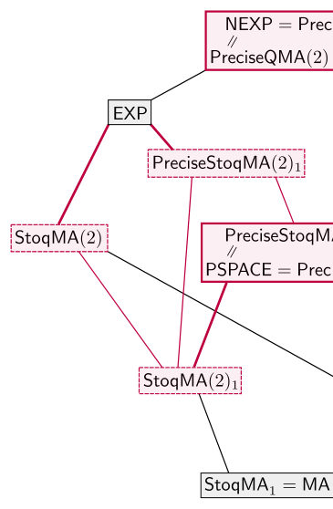
Fig 1. Figure 1: Relationships among StoqMA(2), its variants, and other complexity classes.
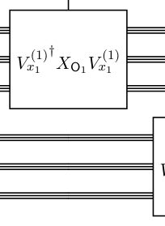
Fig 2. Figure 3: Conjunction of stoquastic verifiers V (1) x1 , V (2) x2 , and V (3) x3 .
Summary. This paper explores the complexity of quantum proof systems that are both unentangled and stoquastic. It demonstrates that even without the power of destructive interference, unentangled stoquastic systems can capture significant complexity classes like NP and PSPACE.
Why it may be interesting. not directly relevant
Detailed structure
Main problem. The paper investigates the computational power and structural properties of the complexity class StoqMA(2), which involves unentangled (separable) quantum proofs within sign-problem-free (stoquastic) systems.
Main result. The authors establish that StoqMA(2) is surprisingly powerful, containing NP and having upper bounds in EXP and PSPACE, while showing that unentanglement provides significant power even without destructive interference.
Method. The study employs techniques such as stoquastization of QMA(2) protocols, distribution testing, the Sum-of-Squares (SoS) algorithm, and a new rectangular closure testing framework.
Model / system. The model consists of stoquastic Merlin-Arthur proof systems where the witness is a separable state across two registers and the underlying Hamiltonian is sign-problem-free (non-negative off-diagonal elements).
Key observables. Completeness and soundness errors, promise gaps, and acceptance probabilities.
Important parameters / regimes. Number of provers (k), proof length (qubit count), and the presence of perfect completeness or exponentially small promise gaps.
Assumptions / limitations. The optimality results are stated under the Exponential-Time Hypothesis (ETH).
Figures summary. Figure 1 provides a summary diagram of the relationships between various complexity classes like StoqMA(2), QMA(2), NP, and PSPACE; Figure 3 illustrates the architecture of a verifier for the intersection of promise problems.
Paper structure. The paper introduces the StoqMA(2) class, establishes lower bounds via distribution testing, derives upper bounds using the SoS algorithm and rectangular closure testing, and concludes with an analysis of precise and symmetric variants.
Abstract
Stoquasticity, originating in sign-problem-free physical systems, gives rise to $\sf StoqMA$, introduced by Bravyi, Bessen, and Terhal (2006), a quantum-inspired intermediate class between $\sf MA$ and $\sf AM$. Unentanglement similarly gives rise to ${\sf QMA}(2)$, introduced by Kobayashi, Matsumoto, and Yamakami (CJTCS 2009), which generalizes $\sf QMA$ to two unentangled proofs and still has only the trivial $\sf NEXP$ upper bound. In this work, we initiate a systematic study of the power of unentanglement without destructive interference via ${\sf StoqMA}(2)$, the class of unentangled stoquastic Merlin-Arthur proof systems. Although $\sf StoqMA$ is semi-quantum and may collapse to $\sf MA$, ${\sf StoqMA}(2)$ turns out to be surprisingly powerful. We establish the following results: - ${\sf NP} \subseteq {\sf StoqMA}(2)$ with $\widetilde{O}(\sqrt{n})$-qubit proofs and completeness error $2^{-{\rm polylog}(n)}$. Conversely, ${\sf StoqMA}(2) \subseteq {\sf EXP}$ via the Sum-of-Squares algorithm of Barak, Kelner, and Steurer (STOC 2014); with our lower bound, our refined analysis yields the optimality of this algorithm under ETH. - ${\sf StoqMA}(2)_1 \subseteq {\sf PSPACE}$, and the containment holds with completeness error $2^{-2^{{\rm poly}(n)}}$. - ${\sf PreciseStoqMA}(2)$, a variant of ${\sf StoqMA}(2)$ with exponentially small promise gap, cannot achieve perfect completeness unless ${\sf EXP}={\sf NEXP}$. In contrast, ${\sf PreciseStoqMA}$ achieves perfect completeness, since ${\sf PSPACE} \subseteq {\sf PreciseStoqMA}_1$. - When the completeness error is negligible, ${\sf StoqMA}(k) = {\sf StoqMA}(2)$ for $k\geq 2$. Our lower bounds are obtained by stoquastizing the short-proof ${\sf QMA}(2)$ protocols via distribution testing techniques. Our upper bounds for the nearly perfect completeness case are proved via our new rectangular closure testing framework.
Authors: Nischal Binod Gautam, Enrique P. Blair Type: theory · Category: other · PDF:https://arxiv.org/pdf/2604.27110v1 Analysis basis: abstract only; PDF text extraction failed or PDF unavailable
Summary. This paper explores an advanced pedagogical approach for quantum engineering education that uses conference-style paper writing as a form of authentic assessment. The results suggest that while more challenging than standard projects, this method effectively prepares students for professional scientific communication and research.
Why it may be interesting. not directly relevant
Detailed structure
Main problem. The paper investigates how to move beyond simple project-based learning in quantum engineering education to provide more authentic disciplinary preparation through conference-style writing.
Main result. Students found the conference-style paper requirement demanding but meaningful, noting benefits to engagement, confidence, and technical skill development.
Method. The study uses post-course survey responses from a pilot run of an introductory quantum mechanics course for engineers.
Model / system. The study focuses on an educational curriculum involving project-based learning and a conference-style paper requirement in a quantum engineering course.
Key observables. Perceived effects on conceptual understanding, scientific communication, research readiness, and attitudes toward writing.
Assumptions / limitations. The study assumes that student survey responses accurately reflect the educational impact of the pedagogical intervention.
Paper structure. The paper introduces the context of project-based learning, describes the implementation of the conference-style writing requirement, presents results from student surveys, and concludes with recommendations for scaffolding.
Abstract
Project-based learning is recognized as an effective approach for improving engagement and applied understanding in STEM education. In quantum engineering courses, however, the question is no longer only whether students benefit from projects but how those projects should culminate if the goal is authentic disciplinary preparation. This paper examines the educational role of a conference-style paper requirement embedded within a project-based learning implementation for an introductory quantum mechanics course for engineers. We use post-course survey responses from students in a pilot run of the course. We evaluate perceived effects on conceptual understanding, scientific communication, research readiness, and attitudes toward the writing requirement itself. The results suggest that students viewed the project as beneficial for engagement, confidence, and technical skill development, while the conference-style paper emerged as a demanding but meaningful component of the experience. We argue that once PBL has been established in quantum mechanics education, conference-style writing can serve as an extension of that model, especially for graduate students. The findings support retaining the conference-paper requirement with improved scaffolding.
Authors: Xiaozhou Zan, Hangzhe Li, Jiawei Guo, Gengdong Zhou, Kangyao Chen, Cihan Gao, Zijun Xu, Kenji Watanabe, Takashi Taniguchi, Anqi Wang, Jie Shen, Jinsong Zhang, Zhida Song, Yayu Wang Type: experiment · Category: strongly correlated electrons · PDF:https://arxiv.org/pdf/2604.27788v1 Analysis basis: abstract only; PDF text extraction failed or PDF unavailable
Summary. This paper demonstrates how in-plane magnetic fields can control the Chern number in rhombohedral graphene and induce new superconducting phases. The discovery of a field-induced superconducting phase provides strong evidence for spin-triplet pairing in these moire systems.
Why it may be interesting. not directly relevant
Detailed structure
Main problem. Investigating the interplay between topological states and unconventional superconductivity in eight-layer rhombohedral graphene under in-plane magnetic fields.
Main result. The study observes Chern number reversal in the QAH state and identifies three distinct superconducting phases with varying responses to in-plane magnetic fields, including a field-induced phase suggesting spin-triplet pairing.
Method. Transport measurements on hBN-aligned eight-layer rhombohedral graphene moire superlattices using displacement fields and in-plane magnetic fields as control parameters.
Key observables. Chern number, superconducting phase transitions, and response to in-plane magnetic fields.
Important parameters / regimes. Electron-doped vs. hole-doped carriers, displacement fields, and in-plane magnetic field strength.
Paper structure. The paper investigates the electronic properties of 8-layer rhombohedral graphene, specifically focusing on the QAH state and three superconducting phases under magnetic and electric field tuning.
Abstract
Rhombohedral graphene with topological flat bands offers an ideal platform for realizing correlated and topological quantum phases. Here we investigate hBN aligned eight-layer rhombohedral graphene moire superlattices, which host a robust quantum anomalous Hall (QAH) state alongside three unconventional superconducting phases. For electron-doped carriers away from the moire potential, we observe QAH Chern number reversal driven by the displacement fields and in plane magnetic fields. For hole-doped carriers near the moire superlattice, the three superconducting phases exhibit distinctively different in plane magnetic field responses: one is weakly enhanced, the second is strongly suppressed, and the third exclusively induced by in plane magnetic field. The isotropic in plane magnetic field response in the QAH regime points to interplay between orbital magnetism and spin-orbit coupling, and the field-emergent superconductivity provides compelling evidence for spin-triplet pairing. Our work demonstrates a highly versatile platform for coexisting topological and superconducting states, and highlights in plane magnetic field as a powerful in-situ control knob for engineering novel quantum devices.
Authors: Bradley A. Chase, Farrokh Labib Type: theory · Category: quantum information and computing · PDF:https://arxiv.org/pdf/2604.27058v1 Analysis basis: abstract only; PDF text extraction failed or PDF unavailable
Summary. The authors present Clifft, an open-source simulator that optimizes the classical simulation of near-Clifford circuits by focusing computational effort on a dynamic active subspace. This approach allows for the first exact, large-scale simulation of complex fault-tolerant processes like magic state cultivation. It provides a significant speedup over existing tools, making it possible to study error-correction protocols over hundreds of billions of shots.
Why it may be interesting. not directly relevant
Detailed structure
Main problem. Classical simulation of fault-tolerant quantum circuits is limited by exponential scaling in qubit count, T-count, or per-shot tracking overhead.
Main result. The introduction of Clifft, a simulator that achieves orders-of-magnitude throughput gains by shifting exponential costs to a dynamic active subspace, enabling the first exact end-to-end simulation of magic state cultivation at scale.
Method. Clifft uses an architecture that factors the quantum state into an offline Clifford frame, an online Pauli frame, and a dynamically sized active state vector, resolving deterministic transformations ahead of time.
Model / system. Near-Clifford quantum circuits, specifically focusing on fault-tolerant protocols including magic state cultivation and the escape stage.
Key observables. Discrepancy between true T-gate circuits and S-proxy circuits; error rates/failures in the escape stage.
Important parameters / regimes. T-count, qubit count, peak active virtual dimension, decoder-gap thresholds, and magic state cultivation stages.
Assumptions / limitations. The simulation assumes the circuit can be decomposed into Clifford and non-Clifford components where the non-Clifford dimension remains manageable.
Paper structure. The paper introduces the Clifft architecture, compares its performance against existing GPU-accelerated and stabilizer-rank simulators, and demonstrates its utility through large-scale simulations of magic state cultivation and error analysis.
Abstract
Exact classical simulation of fault-tolerant quantum circuits remains limited by a tradeoff between exponential state vector scaling, exponential $T$-count scaling in stabilizer-rank approaches, and per-shot tracking overhead in sparse generalized stabilizer simulators. In this work, we introduce Clifft, an open-source simulator that shifts the dominant exponential cost from the total qubit count to a dynamic active subspace by factoring the quantum state into an offline Clifford frame, an online Pauli frame, and a dynamically sized active state vector. This architecture resolves deterministic Clifford coordinate transformations ahead of time, generalizing Stim's compile-once, sample-many execution model to circuits with non-Clifford operations. Consequently, exponential simulation costs are determined by the peak active virtual dimension, which expands during non-Clifford operations and contracts during measurements. Clifft remains within a constant factor of standard tools in the pure-Clifford and non-Clifford limits, while delivering up to orders-of-magnitude throughput gains over GPU-accelerated near-Clifford simulators on low-magic fault-tolerant benchmarks. Executing on commodity CPUs and exposing a Stim-like API, Clifft enables, to our knowledge, the first exact end-to-end simulation of magic state cultivation including the escape stage, over hundreds of billions of shots. These simulations show that escape-stage failures suppress the discrepancy between the true $T$-gate circuit and its $S$-proxy at low decoder-gap thresholds, while at high thresholds the full-protocol behavior approaches the larger discrepancy observed in the cultivation stages alone.
Authors: Emma Andrews, Sahan Sanjaya, Prabhat Mishra Type: theory · Category: quantum information and computing · PDF:https://arxiv.org/pdf/2604.28176v1 Analysis basis: full PDF text, analyzed in chunks
↔ Scroll figures horizontally
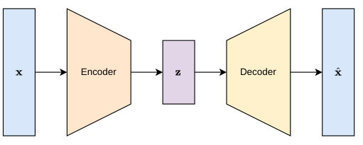
Fig 1. Fig. 3: Classical autoencoder structure.
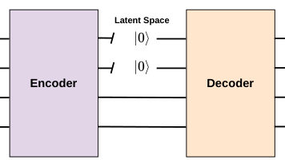
Fig 2. Fig. 4: Quantum autoencoder structure.Fig 3. Fig. 2: General structure of QML models.Fig 4. Fig. 5: Example of FGSM ϵ = 0.30 attack on MNIST images. The original MNIST images are shown in the top row, while the adversarial images are in the bottom row.Fig 5. Fig. 6: An overview of our defense framework. A sample, either clean or adversarial, is given as input x to the QAE. The QAE produces a reconstruction ˆx which is given to the VQC for classification. The QAE also produces the encoding fidelity ⟨σZ⟩x, which is used in calculation of the confidence metric. Once the VQC has predicted the reconstruction ˆx, it produces the logit difference lˆx which is used in addition to the encoding fidelity ⟨σZ⟩x to calculate the confidence metric C. This is compared against the confidence threshold T. If the calculated confidence metric C meets the confidence threshold T, the predicted class label from the VQC is used. Otherwise, the sample is rejected as a...Fig 6. Fig. 7: Two layers of the circuit-centric classifier design for a four-qubit circuit. A layer consists of a group of 4 rotation gates followed by 4 entangling gates.Fig 7. Fig. 8: A SWAP test used to measure the fidelity between quantum states |ψ1⟩and |ψ2⟩.Fig 8. Fig. 9: The MNIST VQC-100 model can still predict with about the same accuracy when the test images have been reconstructed via a QAE first. The resulting accuracy of original samples is 81.23%, while the accuracy on QAE reconstructions of the original samples is 81.26%.Fig 9. Fig. 10: The MNIST images are perturbed with the FGSM ϵ = 0.30, as shown in the top row. The VQC prediction on these images are labeled above the images. Each image cannot be predicted correctly. The bottom row showcases the QAE reconstructions of the associated FGSM adversarial image. These reconstructions were able to make two of the images now predict correctly.Fig 10. Fig. 11: With the PGD adversarial perturbations, the QAE can reconstruct the images and remove some of the adversarial noise, allowing the model to correctly predict two images now than none prior without any defense.
Summary. This paper introduces QAE++, a defense framework designed to protect quantum machine learning models from adversarial noise. By using a quantum autoencoder to reconstruct input data and a diagnostic metric to reject suspicious samples, the method achieves much higher classification accuracy under attack than previous methods.
Why it may be interesting. not directly relevant
Detailed structure
Main problem. Variational Quantum Classifiers (VQCs) are highly vulnerable to adversarial attacks like FGSM and PGD, where small input perturbations cause incorrect predictions, and existing defenses like adversarial training are often impractical or prone to overfitting.
Main result. The proposed QAE++ framework, which uses a quantum autoencoder for purification and a confidence metric for sample rejection, significantly outperforms classical autoencoder defenses, achieving up to a 68% improvement in prediction accuracy under attack.
Method. The authors propose an adversarial-training-free defense that uses a Quantum Autoencoder (QAE) to reconstruct and 'purify' input states, combined with a confidence metric based on encoding fidelity and logit difference to identify and reject adversarial samples.
Model / system. The study utilizes Variational Quantum Classifiers (VQCs) with strongly entangling layers and Quantum Autoencoders (QAE) for data compression and reconstruction, using amplitude embedding to map MNIST and FashionMNIST data onto qubits.
Key observables. Prediction accuracy, encoding fidelity (measured via SWAP test), and logit difference between the highest and second-highest class predictions.
Important parameters / regimes. Perturbation magnitude (epsilon), latent space dimension (k), and confidence thresholds (T) derived from clean validation sets.
Assumptions / limitations. The decoder is assumed to be the Hermitian conjugate of the encoder (reversibility), and the defense threshold is determined using a clean validation set.
Figures summary. Figures illustrate adversarial attacks on MNIST, the architectures of VQCs, CAEs, and QAEs, the SWAP test for fidelity, and various performance plots showing accuracy improvements and reconstruction quality.
Paper structure. The paper identifies the vulnerability of VQCs, introduces the QAE-based purification method, details the QAE++ confidence metric, presents comparative evaluations against classical and undefended models, and discusses limitations.
Abstract
Machine learning models can learn from data samples to carry out various tasks efficiently. When data samples are adversarially manipulated, such as by insertion of carefully crafted noise, it can cause the model to make mistakes. Quantum machine learning models are also vulnerable to such adversarial attacks, especially in image classification using variational quantum classifiers. While there are promising defenses against these adversarial perturbations, such as training with adversarial samples, they face practical limitations. For example, they are not applicable in scenarios where training with adversarial samples is either not possible or can overfit the models on one type of attack. In this paper, we propose an adversarial training-free defense framework that utilizes a quantum autoencoder to purify the adversarial samples through reconstruction. Moreover, our defense framework provides a confidence metric to identify potentially adversarial samples that cannot be purified the quantum autoencoder. Extensive evaluation demonstrates that our defense framework can significantly outperform state-of-the-art in prediction accuracy (up to 68%) under adversarial attacks.
Authors: B-A. Courchene, A. Hampel, S. Beck, J. R. Paudel, J. D. Grassi, L. A. Lapinski, A. M. Derrico, M. Terilli, M. Kareev, C. Klewe, A. Gloskovskii, C. Schlueter, S. K. Chaluvadi, F. Mazzola, I. Vobornik, P. Orgiani, J. Chakhalian, A. J. Millis, A. X. Gray Type: both · Category: strongly correlated electrons · PDF:https://arxiv.org/pdf/2604.28054v1 Analysis basis: full PDF text, analyzed in chunks
↔ Scroll figures horizontally
Fig 1. Fig. 1 | Dimensionality-driven evolution of electronic structure and interfacial magnetism inFig 2. Fig. 2 | Dimensionality-driven evolution of the LNO spectral function from DFT+DMFT. a, UnfoldedFig 3. Fig. 3 | Polarization-dependent ARPES linear dichroism in LNO/CMO superlattices. a-d, Momentum-Fig 4. Figure 4 | Theoretical orbital dichroism from DFT+DMFT for bulk-like and monolayer LNO. a, b,
Summary. This paper demonstrates that the emergent ferromagnetism at the LaNiO3/CaMnO3 interface is controlled by the electronic state of the LaNiO3 layer. As the layer is thinned, a metal-insulator transition and orbital reconstruction occur, which shuts down the charge transfer necessary for interfacial magnetism.
Why it may be interesting. not directly relevant
Detailed structure
Main problem. Investigating how dimensionality-driven electronic and orbital transitions in ultrathin LaNiO3 layers mediate emergent interfacial magnetism in LaNiO3/CaMnO3 superlattices.
Main result. Reducing LaNiO3 thickness drives a metal-insulator transition and an orbital-polarization crossover, which suppresses charge transfer across the interface and subsequently suppresses the interfacial Mn magnetic moment.
Method. The study combines in situ pulsed-laser deposition, polarization-dependent ARPES, XMCD, and HAXPES with first-principles DFT+DMFT calculations.
Model / system. Epitaxial LaNiO3/CaMnO3 superlattices with varying LaNiO3 thicknesses (1, 3, 4, and 6 unit cells) grown on LaAlO3 (001) substrates.
Key observables. Fermi-surface intensity maps, quasiparticle coherence, orbital polarization (dz2 vs dx2-y2), interfacial Mn magnetic moment, and near-Ef spectral weight.
Important parameters / regimes. LaNiO3 thickness (1 to 6 unit cells), ultrathin limit, metal-insulator transition (MIT) onset at 3 u.c., and biaxial compressive strain (-1.1%).
Assumptions / limitations. Calculations were performed in the paramagnetic state and used Padé approximants for analytical continuation of self-energy.
Figures summary. Figure 1 shows the superlattice schematic and experimental geometry; Supplemental figures show structural characterization (XRD, XRR, LEED, STM), chemical composition (HAXPES), and theoretical spectral functions (DFT+DMFT).
Paper structure. The paper introduces the problem of interfacial magnetism, describes the experimental growth and characterization of superlattices, presents ARPES and XMCD results showing the thickness-dependent electronic and magnetic transitions, and concludes with DFT+DMFT validation of the orbital-driven mechanism.
Abstract
Emergent magnetic states at oxide interfaces arise from the interplay of charge transfer, orbital reconstruction, and dimensional confinement, offering a route to engineered correlated-electron behavior in nanoscale spintronic materials. Here, we combine in situ synthesis, polarization-dependent angle-resolved photoelectron spectroscopy, X-ray magnetic circular dichroism, and first-principles electronic-structure calculations to investigate LaNiO3/CaMnO3 superlattices. We show that reducing the LaNiO3 thickness drives a metal-insulator transition accompanied by loss of electronic coherence and an orbital-polarization crossover in the ultrathin limit. These changes weaken charge transfer across the interface and suppress the interfacial Mn magnetic moment in CaMnO3, revealing that the emergent ferromagnetic state is directly governed by electronic confinement in LaNiO3. The insulating state and orbital reconstruction are reproduced by density functional theory combined with dynamical mean-field theory. Together, these results establish a direct and tunable coupling among electronic, orbital, and magnetic degrees of freedom in oxide heterostructures.
Authors: Dario Bocchi, Giulio Biroli, Chiara Cammarota, Federico Ricci-Tersenghi Type: theory · Category: disordered systems and neural networks · PDF:https://arxiv.org/pdf/2604.27992v1 Analysis basis: full PDF text, analyzed in chunks
↔ Scroll figures horizontally
Fig 1. FIG. 1: Continuous vs. Discontinuous BBP transitions. Each row shows (left to right) the inverse resolvent map z(g), the spectral density near the right edge, and the eigenvector overlap as a function of the spike strength. In the continuous case, z(g) develops a turning point (dz/dg = 0) at the edge, beyond which lies the incorrect branch, the density vanishes sub-linearly, and the overlap turns on smoothly. In the discontinuous case, z(g) reaches the edge without a turning point (dz/dg ̸= 0), the density vanishes super-linearly at the edge, and the overlap exhibits a finite jump at onset.Fig 2. FIG. 2: The origin of different tails of spectral densities in the Deformed GOE ensemble. The function z(x) is plotted against the auxiliary variable x = g −z/σ2 for different values of a and hmax. In the first line, the plot for a standard GOE (hmax = 0) is shown. Left column (a < 2): The function z(x) always exhibits a turning point (z′(x) = 0) and the incorrect branch diverges at the domain boundary xc = −hmax/σ2, implying a standard square-root edge in all three cases. Right column (a > 2): The derivative z′(x) is finite at the domain boundary, and depending on the values of hmax and σ can be positive (mid panel), leading again to a square-root edge, or negative (bottom panel), leading...Fig 3. FIG. 3: The origin of different tails of spectral densities in the Reweighted Wishart ensemble. The function z(g) is plotted for different values of a and the aspect ratio q = N/T. Left column (a < 2): The branch with incorrect positive derivative z′(g), diverging at the domain boundary gmax = (qfmax)−1, ensures the existence of a turning point with z′(g) = 0 and consequently a standard square-root edge. Right column (a > 2): The derivative z′(g) is finite at the domain boundary, and depending on the value of q can be positive (top panel), allowing for a turning point and a square-root edge, or negative (bottom panel), leading to a super-linear edge.Fig 4. FIG. 4: Finite-size scaling of the maximum eigenvalue. Upper panels are for the deformed GOE with parameters a = 3, hmax = 5, and σ2 = 2. Lower panels are for the reweighted Wishart ensemble with parameter a = 3, fmax = 1, and q = 5. In the left panels, we plot the difference between the mean value of largest eigenvalue λmax (averaged over 104 samples) and the theoretical edge λ+ computed in the large N limit, as a function of the distance from the critical point, α −αBBP. In the right panels, the same data is collapsed using the predicted scaling for both axes. The data collapse confirms that the fluctuations of the largest eigenvalue and the width of the critical region scale as N −1/a,...Fig 5. FIG. 5: Finite-size scaling of the overlap. Upper panels are for the deformed GOE with parameters a = 3, hmax = 5, and σ2 = 2. Lower panels are for the reweighted Wishart ensemble with parameter a = 3, fmax = 1, and q = 5. In the left panels, we plot the mean overlap between the principal eigenvector and the rank-one perturbation (i.e., the signal to be detected), as a function of the distance from the critical point, α −αBBP. In the right panels, the same data is collapsed using the predicted scaling. The universal curve distinguishes the signal-dominated regime (linear behavior on the right) from the noise-dominated regime (left tail proportional to |y|−a/2, see red dashed line in the...Fig 6. FIG. 6: Qualitative behavior of vT G0(z)v near the upper edge. The horizontal lines show the equation vT G0(z)v = 1/α for three regimes: α > αBBP, where the outlier lies above the asymptotic edge λ+; α = αBBP, where it coincides with λ+; and α < αBBP, where at finite N it can lie below λ+ but still above the largest eigenvalue λ1.Fig 7. Figure 6 shows that, depending on α, the distinguished solution obtained from the smooth principal-value part may in fact continue also below λ0 1, in which case it is no longer the largest eigenvalue of the sample and becomes embedded among the top bulk eigenvalues of the spiked matrix. A full characterization of this regime, and a pre- cise criterion to identify it at finite N, is left for future work. Here we restrict ourselves to the controlled region
Summary. This paper identifies a new class of discontinuous BBP transitions in random matrices where signal detection occurs abruptly. It reveals that in finite systems, an extended pre-critical region allows for signal recovery even below the theoretical threshold, which has significant implications for signal processing and neural network training.
Why it may be interesting. not directly relevant
Detailed structure
Main problem. Investigating the conditions under which the Baik-Ben Arous-Péché (BBP) transition, which governs the emergence of outlier eigenvalues in spiked random matrices, is discontinuous rather than continuous.
Main result. The authors show that BBP transitions are discontinuous when the spectral density vanishes super-linearly (exponent a > 2) at the spectral edge, leading to a finite jump in eigenvector overlap and a pre-critical region where signal recovery occurs below the asymptotic threshold.
Method. The study employs Random Matrix Theory, specifically using the resolvent formalism, Stieltjes transform, and Free Probability Theory (R-transform) to analyze the spectral properties and finite-size scaling.
Model / system. The paper analyzes spiked models consisting of rank-one perturbations of large random matrices, specifically deformed Gaussian Orthogonal Ensembles (GOE) and reweighted Wishart ensembles.
Key observables. Outlier eigenvalue, eigenvector overlap (correlation between the signal and the leading eigenvector), and spectral edge density.
Important parameters / regimes. Signal-to-noise ratio (alpha), power-law exponent of the spectral density (a), matrix size (N), and the aspect ratio (q) for Wishart ensembles.
Assumptions / limitations. Assumes the large-N limit for the fundamental transition and asymptotic freeness between the unperturbed matrix and the Wigner component.
Figures summary. Figure 1 compares continuous vs. discontinuous BBP transitions via the inverse resolvent and overlap; Figure 2 illustrates the transition type in specific ensembles; Figure 4 demonstrates finite-size scaling and data collapse for the maximum eigenvalue.
Paper structure. The paper introduces the BBP transition, establishes the mathematical condition for discontinuity based on spectral edge decay, analyzes specific models (deformed GOE and Wishart), develops a finite-size scaling theory, and discusses implications for machine learning and biological systems.
Abstract
The Baik-Ben Arous-Peche (BBP) transition sets fundamental limits for detecting low-rank structure in noisy high-dimensional data and underlies a wide range of spectral methods in many fields from physics to statistics and data sciences. In standard settings, this transition is continuous, implying that signal recovery emerges gradually above a sharp threshold. We show that BBP transitions can instead be discontinuous in very general settings and provide a full theory of this phenomenon. When the eigenvalue density vanishes faster than linearly at the spectral edge, the overlap between the leading eigenvector and the signal jumps discontinuously at the critical point. We study this mechanism in deformed Gaussian and reweighted Wishart ensembles. We analyze in detail the finite-size effects, which play a central and qualitatively new role in the discontinuous BBP transition. Unlike the continuous BBP transition, we establish the existence of an extended pre-critical region where informative eigenvectors emerge well before the asymptotic threshold. The main consequence-and difference from the continuous BBP transition-is that signal recovery can occur at significantly lower signal-to-noise ratio and it is accompanied by strong sample-to-sample variability. Our results show the relevance and the novelty of the discontinuous BBP transition, and highlight the practical implications for signal detection.
Authors: Asiri Thennakoon, Prena Chaudhary, Sankha Subhra Bakshi, Tommy Park, Tristen Lowrey, Daniel Pajerowski, Christina Hoffmann, Junghong H. He, Hiroaki Ueda, Collin Broholm, Gia-Wei Chern, Seung-Hun Lee Type: both · Category: strongly correlated electrons · PDF:https://arxiv.org/pdf/2604.27310v1 Analysis basis: full PDF text, analyzed in chunks
↔ Scroll figures horizontally
Fig 1. Figure 1 | Neutron diffraction study of Cs8LiNa3Ti12F48. (a) Comparison of the observed (𝐹𝑜𝑏𝑠) and calculated (𝐹𝑐𝑎𝑙𝑐) structure factors, derived from time-of-flight neutron data and crystal structure refinement using the Jana2020 package, respectively, demonstrating good agreement between experiment and the refined model. (b) Polyhedral representation of the complete three- dimensional monoclinic structure (space group Cm). The nonmagnetic alkali-metal cations (Cs, Na, Li) occupy the structural voids, acting as physical spacers between the magnetic Ti–F networks. (c) An isolated top-down view of the Ti sublattice highlighting a single distorted kagome layer. The fundamental repeating...Fig 2. Figure 2 | Temperature dependence of the bulk magnetic susceptibility of Cs8LiNa3Ti12F48, Magnetic susceptibility, 𝜒= 𝑀/𝐻, measured on a single crystal in an applied field of 𝜇0𝐻= 1 T with the field perpendicular to the kagome plane (blue circles) and parallel to the kagome plane (red circles). The two curves nearly overlap over the full measured temperature range, indicating weak bulk magnetic anisotropy. The inset on the top right shows the inverse susceptibility 1/𝜒 together with a Curie-Weiss fit to the high-temperature region (dashed blue line), yielding a Curie- Weiss temperature Θ𝐶𝑊= −36.9 K and 𝑝𝑒𝑓𝑓= 1.693 𝜇𝐵.Fig 3. Figure 3 | Q-dependence of the equal-time spin correlation function in Cs8LiNa3Ti12F48. a,Fig 4. Figure 4 | Dynamic spin correlations in Cs8LiNa3Ti12F48. Color contour maps of the normalized dynamic spin correlation function, 𝑆(𝐐, ℏ𝜔), as a function of momentum (𝐐) and energy transfer (ℏ𝜔), measured along two representative momentum cuts through the two-dimensional Brillouin zone, indicated by the green arrows in the insets. For each cut, the top panel shows the data at 1.7 K, the middle panel shows the data at 30 K, and the bottom panel shows the corresponding linear spin-wave theory (LSWT) intensity, 𝑆𝐿𝑆𝑊𝑇(𝐐,ℏ𝜔), calculated for the anisotropic J-D model. In the first panels, the black lines represent the calculated LSWT dispersion relation. Panel a follows the M1 →Γ1 →M1
Summary. This paper identifies a unique state of 'anisotropic fractionalization' in a Ti-based kagome-related antiferromagnet. By using neutron scattering, the authors show that a 2D lattice can behave as a network of weakly coupled 1D chains, demonstrating that 1D-like quantum criticality can survive within a 2D framework.
Why it may be interesting. The paper explores how many-body dynamics and fractionalization can persist across a dimensional crossover, which is highly relevant to understanding the stability of exotic excitations in many-body systems.
Detailed structure
Main problem. The study investigates the dimensional crossover of quantum disorder, specifically how fractionalized excitations evolve when transitioning from 1D criticality to 2D topological order in a frustrated lattice.
Main result. The researchers discovered a regime of 'anisotropic fractionalization' in a Ti-based kagome-related magnet, where 2D lattice dynamics reorganize into a network of weakly coupled spin-1/2 chains, maintaining 1D-like signatures.
Method. The study combines single-crystal neutron diffraction for structural refinement with inelastic neutron scattering (INS) using the CNCS and TOPAZ spectrometers at the Spallation Neutron Source.
Model / system. The physical system is the Ti-based quantum antiferromagnet Cs8LiNa3Ti12F48, which features a distorted kagome lattice of Ti3+ (S=1/2) ions and an anisotropic exchange Hamiltonian with four distinct nearest-neighbor couplings and Dzyaloshinskii-Moriya interactions.
Key observables. Dynamic spin correlation function S(Q, h-omega), equal-time response function S(Q), magnetic susceptibility, and crystal structure refinement statistics.
Important parameters / regimes. Exchange couplings (JA=11.26, JB=3.20, JC=8.15, JD=1.22 meV), Curie-Weiss temperature (theta_CW = -36.9 K), and measurement temperatures (1.7 K and 30 K).
Assumptions / limitations. The structural refinement assumed a fixed position for the Lithium atom due to high correlation with the local background; the magnetic model assumes a 2D nearest-neighbor kagome framework.
Figures summary. The figures likely include crystal structure refinements, magnetic susceptibility plots, and momentum-resolved inelastic neutron scattering maps showing the excitation continuum and rod-like scattering.
Paper structure. The paper introduces the problem of dimensional crossover, describes the crystal structure and synthesis of the Ti-based magnet, presents neutron diffraction and susceptibility data, details the inelastic neutron scattering results showing the excitation continuum, and concludes with a discussion on anisotropic fractionalization.
Abstract
Collective motions in strongly interacting magnets involve many spins and are often described in terms of integer-spin excitations. However, in certain cases, the collective motion can behave as if these integer excitations break apart into smaller, particle-like entities with unusual properties. Such fractionalized excitations in quantum magnets are commonly associated either with topological order in two dimensions or with criticality in one dimension. It remains unclear how these distinct mechanisms are connected across a dimensional crossover. Here we investigate the Ti-based quantum antiferromagnet, $Cs_{8}LiNa_{3}Ti_{12}F_{48}$, in which $Ti^{3+}$ ($3d^{1}$, $S=1/2$) ions interact antiferromagnetically within distorted kagome planes. Our inelastic neutron scattering study on a single crystal reveals a frustrated network of weakly coupled spin-$1/2$ chainsaws, realizing a regime of dimensional frustration in which interchain couplings fail to establish coherent two-dimensional order. The magnetic excitation spectrum exhibits a strong continuum spanning the full measured momentum and energy phase space. In addition, the dynamic spin correlation function displays rod-like scattering in momentum space, indicating a quasi-one-dimensional nature of the magnetic correlations. These results point to fractionalized excitations with intrinsically directional character, demonstrating that signatures of one-dimensional criticality can persist within a two-dimensional lattice. Our findings establish anisotropic fractionalization as a distinct organizing principle for quantum-disordered states.